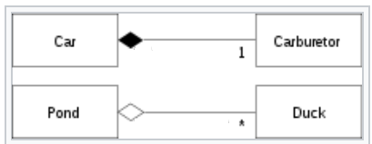
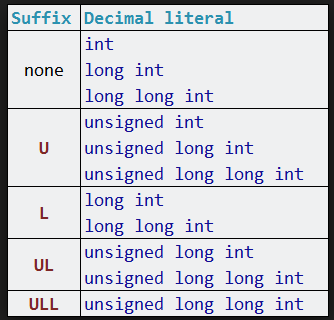
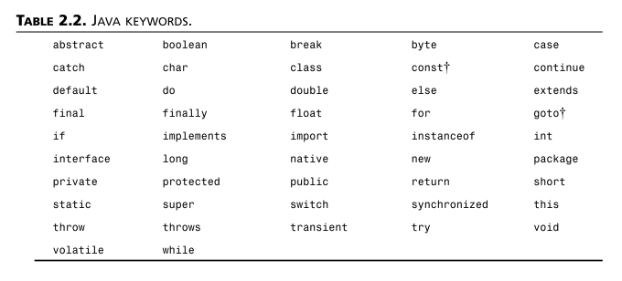
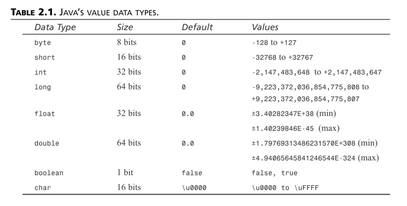
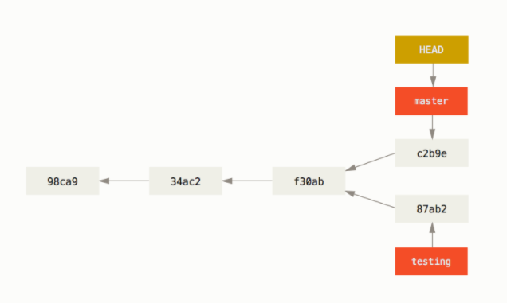

Programming
Links
- Many Tutorials: https://www.w3schools.com/
C++
- Online Compiler: https://www.tutorialspoint.com/compile_cpp_online.php
- Compiler Explorer (see ASM-Code): https://godbolt.org/
- Language Reference C++: https://en.cppreference.com/w/
- Core Guidelines: http://isocpp.github.io/CppCoreGuidelines/CppCoreGuidelines
- Tutorial: https://www.learncpp.com/
- GNU Linker: https://sourceware.org/binutils/docs/ld/index.html#SEC_Contents
JavaScript
- Online IDE: https://jsfiddle.net/
Assembler
Typically there are 3 categories of commands:
- memory access
- arithmetic
- control program flow (jumps, conditions)
Examples
Euclidean Algorithm:
int gcd(int a, int b) { while (a != b) // We enter the loop when a<b or a>b, not when i==j if (a > b) // When a>b we do this a -= b; else // When a<b we do that (no if(i<j) needed since i!=j is checked in while condition) b -= a; return a; }
transforms to
; assign a to register r0, b to r1 loop: CMP r0, r1 ; set condition "NE" if (a != b), ; "GT" if (a > b), ; or "LT" if (a < b) SUBGT r0, r0, r1 ; if "GT" (Greater Than), a = a-b; SUBLT r1, r1, r0 ; if "LT" (Less Than), b = b-a; BNE loop ; if "NE" (Not Equal), then loop B lr ; if the loop is not entered, we can safely return
C and C++
Advanced Topics
Shallow vs. deep copy
- shallow copy
- member wise copy of an object
That can cause trouble when a class handles dynamically allocated memory. Copying a pointer just creates a new pointer pointing to the same object. But you might want a copy of the object pointed to also.
lvalues and rvalues
Expressions in C++:
- Primary Expressions:
"hello", operands of operators, literals, variable names etc. - Constant Expressions:
x = 15 - Integral Expressions:
a + b - Float Expressions:
x = 8.9 - Pointer Expressions:
&x,ptr++ - Relational Expressions:
a > b - Logical Expressions:
a > b && b > c - Bitwise Expressions:
0x01 << 2
Those expressions have values (they evaluate to a value).
Value categories cppreference

What do the letters mean?
- "l", "r" originally from left and right of the
=operator - "p" pure
- "x" expire
- "g" generalized
Primary categories: prvalue (pure), lvalue
Originally: Values right and left of the assignment operator. You can also think of an lvalue as a locator value (as a mnemonic).
Examples
- rvalue:
- Literals:
10(prvalue) - temporary objects:
a++,a < b,a + 1,firstName + lastName(prvalue) - not possible:
10 = x(you cannot assign a value to an rvalue) - Function Calls:
GetValue() - Temporary Objects:
MyClass{1000} - Lambda expressions:
[](int x){ return x * x; } thispointerenumsvalues
- Literals:
- lvalue:
i = 10++a,a = b,- string literals
"Hello"
- expiring value or xvalue: (temporary)
Notes:
void print(std::string& name){} // std::string& is an lvalue-reference std::string first = "Hello "; std::string second = "Joe"; print(first + last); // this doesn't compile because "first + last" is an rvalue void print(const std::string& name){} // like this it works
Simple picture
- Every expression is either a rvalue or a lvalue (or an xvalue).
- A lvalue is an expression that represents an object in memory (something that has an address), typically a function or an object.
- A rvalue is an expression that does not represent an object in memory. It might represent a temporary result in a register (or wherever). E.g. literals, anonymous objects (String("")).
- It doesn't make sense to assign a value to an rvalue.
Compile error examples:
foo() = 2; //-> lvalue required 4 = var; // 4 is not an lvalue (var + 1) = 4; // var + 1 is not an lvalue int& foo() { return 2; //-> invalid initialization of non-const reference // of type 'int&' from an rvalue of type 'int' }
This however is possible!
int globalvar = 20; int& foo() { return globalvar; // this is an lvalue } int main() { foo() = 10; return 0; } // this works because of the above std::map<int, float> mymap; mymap[10] = 5.6; //[] returns a reference that can be assigned to
Rvalue references
Examples of Rvalues:
int x = 1;1is an Rvalue (1 = x;doesn't make sense, neither&1)setValue() = 3;ifsetValuereturns an integer but works if it returnsint&.
Rule of thumb:
- Lvalues have an address, Rvalues don't.
A literal like 1 is usually not stored in memory but in a register.
RValue references were introduced in C++ 11 to solve two problems:
- Move semantics
- Perfect forwarding
Syntax looks like this: int&& rvalueRef;
- R-value references extend the lifetime of a (temporary) object to the lifetime of the reference.
- Non const R-values allow for modification of an r-value.
With rvalue references a distinction is possible for the compiler that was not possible before:
Online IDE: Function overloading with two types of references
#include <iostream> using namespace std; // we can distinguish between this 2 functions now: void fun(const int& val) { cout << "int& val: " << val << "\n"; } void fun(const int&& val) { cout << "int&& val: " << val << "\n"; } int moreFun() { int a = 1; return a; } int main() { // calls the int&& version fun(moreFun()); fun(2); // calls the int& version int x; fun(x = 3); int&& ref = moreFun(); cout << "this is a reference: " << ref << "\n"; cout << "extending the lifetime of the temp object\n"; int ret = moreFun(); cout << "whereas this is a copy: " << ret; /* comment out int&& and all calls go to int& version */ int&& reff = 5; reff++; // can be modified! return 0; }
Output:
int&& val: 1 int&& val: 2 int& val: 3 this is a reference: 1 extending the lifetime of the temp object whereas this is a copy: 1
So now we need to understand how this distinction helps to solve the above problems.
Rvalue references are needed for move constructor and move assignment operator.
Move semantics (C++11)
Move the ownership of an object from reference A to reference B.
If you have a pointer p1 pointing to an
object o and then you do p2 = std::move(p1); you don't get two pointers pointing to the
same object but p2 pointing to o and p1 pointing to nullptr. The purpose is to avoid multiple pointers pointing to the same object.
With the implementation of move semantics in C++11 we can move the ownership of data from a temporary object to a destination object.
Let's play around with std::move()
std::vector<int> v1 = {1, 2, 3, 4}; std::vector<int> v2 = {5, 6, 7, 8}; v2 = std::move(v1); // now v1 will be empty auto v3 = std::move(v2); // now v2 will be empty
When a function returns an object it does so by value. In this case a copy of the object is created because the original object goes out of scope when leaving the function.
MyClass myFun(); MyClass x; x = myFun(); // the function call is an rvalue, you can't do myFun() = 1;
If the object is big we would rather like to move the underlying object instead of copying it.
To achieve this we need a special implementation of the assignment operator:
MyClass moveFun(); MyClass& MyClass::operator=(const MyClass& other) // A normal assignment operator with lvalue reference MyClass& MyClass::operator=(MyClass&& other) // B move assignment operator with rvalue reference MyClass x, y; x = y; // A normal assignment (lvalue) x = moveFun(); // B move assignement (rvalue)
The compiler can now choose between the two versions, depending on whether the argument is an rvalue or an lvalue.
MyClass& moreFun(); void fun(MyClass& obj); // A void fun(MyClass&& obj); // B fun(x); // -> A fun(MoreFun()); // -> B
Save all the constructing and deconstructing, just swap the pointer.
continue here: https://eli.thegreenplace.net/2011/12/15/understanding-lvalues-and-rvalues-in-c-and-c/
Notes:
- Resource handlers (resource owning types) that can be moved (
std::move) but not copied:std::ifstream,std::unique_ptr,std::thread
Move constructor, move assignment operator
Move ownership of a resource from object A to object B (instead of making a copy like with the copy constructor / assignment operator).
Copy and copy assignment operator looks like this:
MyClass::MyClass(const MyClass& other) // normal copy constructor MyClass& MyClass::operator=(const MyClass& other) // normal assignment operator
Now the const goes away allowing us to modify the reference.
Note: The automatically created functions create copies, they don't move!
Return Value Optimization (RVO, NRVO)
Also called copy elision. Optimization done by the compiler to avoid calling the copy constructor when a local object is returned by a function. This can be achieved by putting the data of the object in the stack frame of the calling function instead of the called function (where it would be normally located).
Most vexing parse
The expression "most vexing parse" comes from Scott Meyers Effective STL.
The compiler cannot distinguish between the creation of an object and the specification of a function. In case of doubt the compiler is required to interpret the line as function declaration.
TimeKeeper time_keeper(Timer()); // This can be either // 1. a variable definition for an object of Type TimeKeeper, initialized with an anonymous instance of class Timer. // 2. a function declaration: function time_keeper() returning a TimeKeeper object and taking a Timer() parameter.
Generators
Return values whenever they are called, possibly forever.
C++ 11 and after
| C++ 11 | C++14 | C++17 | C++20 |
|---|---|---|---|
| smart pointers | override | inline variables | coroutines |
| auto | [[maybe_unused]] |
||
| rvalue references | |||
| lambdas | |||
| nullptr | |||
| constexpr | |||
| std::chrono | |||
| std::async | |||
| concurrency | |||
| thread safe static |
C++ 11
C++ 14
C++ 17
Inline Variables
inline static const std::string WORKPLACE_ID ="bea6d293-4009-4855-8def-2e591360444d";
What is this good for?
If you wanted to initialize a const static member variable in the past, you had to do this:
struct S { const static std::string PATH; }; // here (e.g. another file) it's initialized and stored const std::string S::PATH = "../../myPath/";
With inline variables we don't even have to instantiate the class. There is a certain cost for this, because static initialization since C++17 has to be thread safe.
C++ 20
Coroutines
Functions that can be suspended and resumed.
Keywords: co_await, co_yield, co_return.
With co_yield you can return a generator. Or in other words a coroutine
immediatly returns but saves it's state. When it is called a second time
it will continue with that state.
Bit Fiddling
bit twiddling, bit manipulations
- https://graphics.stanford.edu/~seander/bithacks.html
- http://realtimecollisiondetection.net/blog/?p=78
Note that the smallest unit of data is a byte.
Elementary operations: set, clear, check, flip bits
// set bits |= var |= 0x08; // turn on bit 1000 var |= 1 << 3; // i.e. the 3rd bit from the right // (xxxxxxxx OR 00001000 = xxxx1xxx) var |= (0x10 | 0x01); // turn on multiple bits // (xxxxxxxx OR 00010000 OR 00000001 = xxx1xxx1) // clear bits &=~ var &= ~(1 << n); // (xx1xxxxx AND 11011111 = xx0xxxxx) // check bits & var & (1 << n) // check if n-th bit is set // (xx1xxxxx AND 00100000 = 00100000 which is true) var & 4 == 0 // check if 3ed bit (100) is not set // (xxxxx1xx AND 00000100 = 00000100) var & (0x80 | 0x01) // check for multiple bits // (xxxxxxxx AND (10000000 OR 00000001) = 1xxxxxx1 AND 10000001 = 1xxxxxx1) // flip bits ^= var ^= (0x80 | 0x01); // 1xxxxxx0 XOR (10000000 OR 00000001) = 1xxxxxx0 XOR 10000001 = 0xxxxxx1
Only pointer casts leave the data in memory as is.
Compare float bitwise:
float32 *fp = &value; uint32 v = *((uint32 *)fp); if (v == 0x7f800000) return true;
Bit Flags, Masks
- Bit flags: values for individual bits, e.g. const unsigned char option1 = 0x01; typically set like: option1 | option2 | option3
Bundle bits together: Bit mask
const unsigned int lowMask = 0x0F; num &= lowMask; // mask out higher bits
- std::bitset<8> bits;
Bit Manipulations
Clear least significant bit set
num & (num-1)
How does it work? Either the LSB is the \(2^0\) - bit or all lower bits flip.
Examples:
| num | num &(num-1) |
|---|---|
| 111000 & 110111 | 110000 |
| 10001 & 10000 | 10000 |
The general pattern:
| …0 | …10 | …100 |
| …1 | …01 | …011 |
Modulo-Arithmetic
Modulo arithmetic can be implemented for numbers up to \(2^n\) (n bits) with a bitwise AND operation.
Let's see a simple example with 2 bits: x & 0x03 gives a sequence: 0 1 2 3 0 1 2 …
| 00 & 11 = 00 |
| 01 & 11 = 01 |
| 10 & 11 = 10 |
| 11 & 11 = 11 |
| 100 & 11 = 00 |
| 101 & 11 = 01 |
| 110 & 11 = 10 |
So x mod n can be done with x & (n-1).
Counting bits etc.
Calculate parity
- O(log(n))
- Have to go through the loop log(n) (nr. of bits) times.
unsigned int v; // word value to compute the parity of bool parity = false; // parity will be the parity of v while (v) { parity = !parity; v = v & (v - 1); // clear the least significant bit }
Counting bits set
unsigned int v; // count the number of bits set in v unsigned int c; // c accumulates the total bits set in v for (c = 0; v; c++) { v &= v - 1; // clear the least significant bit set }
C/C++ Differences
Those differences might be compiler dependent.
- no reference parameters: doesnt_work(int &a)
- variable declarations at beginning of function
- no boolean type
- void myFun(void)
Differences regarding keyword const
| C | C++ | |
| Linkage | external | internal |
| Initialization | optional | mandatory |
|
Use |
restricted (e.g. not allowed as size in array decl.) |
everywhere (like a define) |
In C const doesn't mean something is constant in C, only that the variable is read only. So it's not
like a literal and cannot be use like one. In most cases it doesn't compile.
const int v = 10; int a[v] = {0}; // C - NOT OK / C++ - OK int* p = &v; *p = 20; // C - OK / C++ - NOT OK static const int var = 666; static const int var2 = var * 2; // C - NOT OK / C++ - OK
Object oriented programming in C
How to do class instantiation?
Use a struct to hold the individual object data and pass it to functions with a pointer (this-pointer). The struct plus the functions define the class. The same functions are used for all the objects, the differences are stored in the struct variables.
How to do inheritance?
How to do polymorphism?
vtable
Person.h
//declaration of pointers to functions typedef void (*fptrWriteToFile)( Person*, const char*); typedef void (*fptrDelete)( Person *) ; typedef struct { char* pFirstName; char* pLastName; //interface for function fptrDisplayInfo Display; fptrWriteToFile WriteToFile; fptrDelete Delete; }Person_t; Person_t* new_Person(const char* const pFirstName, const char* const pLastName); //constructor void delete_Person(Person* const pPersonObj); //destructor void Person_WriteToFile(Person_t* const pPersonObj, const char* const pFileName);
We derive an Employee now.
Employee.h
// notice that new_Employee returns Person_t* typedef struct { Person_t* pBaseObj; char* pDepartment; char* pCompany; int nSalary; //If there is any employee specific functions; add interface here. }Employee_t; Person_t* new_Employee(const char* const pFirstName, const char* const pLastName, const char* const pDepartment, const char* const pCompany, int nSalary); //constructor void delete_Employee(Person_t* const pPersonObj); //destructor void Employee_WriteToFile(Person_t* const pPersonObj, const char* const pFileName);
Calling Conventions
Calling Conventions determine:
- Parameter passing
- order
- how parameters are passed (push to stack, registers, both)
- stack handling
- first 3 arguments are passed to registers, nr. of parameters fixed
- parameters pushed from right to left, nr. of parameters variable, underscores are generated, name case is preserved
- parameters pushed from left to right, nr. of parameters fixed, underscores are not generated, name case is preserved, callee has to clean the stack
- parameters pushed from left to right, nr. of parameters fixed, underscores are not generated, names are uppercase, caller has to clean the stack
Classes and Objects
A class exists only in source code; it doesn't exist at runtime.
Creation
Default Constructor
A constructor that takes no parameters. If a class has no constructor definitions a public default constructor will be generated automatically (so to avoid construction you need to define a private constructor).
Copy Constructor and overloading =
MyType(const MyType& obj_MyType)
The CC will be called whenever an object is to be created from an existing one. Essential to control passing and returning of userdefined types by value during function calls. Prevent the compiler from doing a bitcopy.
MyType operator=()
You can explicitly call = for the base class:
child.Base::operator=(base);
Initialization
How to initialize members of an object?
Maybe we should first ask when?
- When the object is created
- Later, i.e. the object exists already and we set parameters.
If we stick to 1 we might use an initializer list or create the object with new.
In the second case we need a setter function (the object has to exist, or needs a default
constructor).
A declaration is only a declaration. Initialization ALWAYS takes place in the constructors Initializer list. Also for Aggregation & Composition.
#include "A.h" class B { public: B(); private: A a; }; B::B() : a(2,2) { }
Notes:
constmembers can only be set via initializer list (assignment not possible)
Initializer List
What do we need it for?
To initialize:
- non-static const members
- reference members &member
- member objects which dont have a default constructor
- base class members
Pitfall: Initialization is done in the order of declaration.
class MyClass { public: MyClass(int i) : a(++i), c(++i), b(++i) private: int a; int b; int c; }; MyClass obj(0); // Whats the value of b? it's 1!
Order of Construction and Destruction
Constructors don't actually create the object.
Constructors have two purposes:
- Determine who is allowed to create an object.
- Initialization of objects.
Destructors are always called in the reverse order of the constructors.
Notes:
- Don't call constructors. It will result in a temp object.
Inheritance
Constructor : From base to derived.
I.e. the most base class constructor is called fist, etc. until the most derived class constructor is called.
Shepard myDog; Animal::Animal(), then Dog::Dog(), then Shepard::Shepard()
This does make sense, because the child class may call functions or use data from the base class while the base class doesn't care about the derived class.
Pass parameters from derived constructor to base constructor:
class TJavaIDE : private TJavaIDEFrame{} __fastcall TJavaIDE:: TJavaIDE ( TComponent *owner, TWinControl *parent, TLMDDockSite *dock_site, TLMDDockManager *dock_manager, TAdvToolBarPager *adv_toolbar_pager, TActionManager *action_manager, TAdvMenuOfficeStyler *popup_styler, int ribbon_index ) : TJavaIDEFrame ( owner, parent, dock_site, dock_manager, adv_toolbar_pager, action_manager, popup_styler, ribbon_index ) {}
Destructor : From derived to base.
It is the other way round for destructors, i.e. the most derived destructor is called first and so on till the base class destructor is called last. This is not true when using delete and a base pointer. See Virtual Destructor.
Composition
Note that the member objects (parts) are constructed before the containing class (whole) constructor is called (the initializer list is also before the body of the constructor in the source code).
This makes sense because whole's constructor may want to use the member object. so it should better be initialized first!
Notes:
- If the order in the Initializer List doesn't match the declaration order, there are undefined values.
Example
int x,y,z; MyClass(int _x) : z(y), y(x), x(_x) {} // z and y are initalized to undefined values.
Virtual Destructor
Base destructors should be declared virtual or be protected when using Inheritance.
See: C.35: A base class destructor should be either public and virtual, or protected and non-virtual
The rule of three/five/zero
6 operations relating to the lifecycle of an object:
X(); // default constructor X(const X&); // copy constructor X& operator=(const X&); // copy assignment X(X&&); // move constructor X& operator=(X&&); // move assignment ~X(); // destructor
When a class is a resource handle, i.e. when it manages data through a pointer (reference, handle, etc). Make sure that assignment, and passing by value works and moving data works without exception.
Rule of Zero C.20: If you can avoid defining default operations, do.
In other words: Don't write any of the 6 operations above, if you don't have to. And if you have to, look at the Rules below.
Rule of Three
If a class defines any of the following, then it should define all three:
- Destructor
~MyClass() - Copy Constructor
MyClass(const MyClass& other) - Copy Assignment Operator
MyClass& operator=(MyClass other)
With the implementation of move semantics things get more complicated.
Rule of Five
- Destructor
~MyClass() - Copy Constructor
MyClass(const MyClass& other) - Copy Assignment Operator
MyClass& operator=(MyClass other) - Move Constructor
MyClass(MyClass&& other) - Move Assignment Operator
MyClass& operator=(MyClass&& other)
Constructor Delegation
Call another constructor of the same class.
Relations between Classes

- "has a" - relationship (strong, weak)
- Multiplicity:
Composition
http://www.learncpp.com/cpp-tutorial/102-composition/ Building a class out of other classes, i.e. building a complex object out of simpler objects. (Whole and Part-Relation)
When the object of a composed Class is destroyed, the subobjects are destroyed too, i.e. the composite object is responsible for the destruction of the component parts.
Example
// Composition class Car { private: // Car is the owner of carburetor. // carburetor is created when Car is created, // it is destroyed when Car is destroyed. Carburetor carburetor; };
Aggregation
Parts still exist when the whole is destroyed (e.g. Company - Employee).
-> Use a pointer to an object that exists outside the class scope.
Example
// Aggregation class Pond { private: // Pond is not the owner of ducks, // it has references on other ducks managed somewhere else std::vector<Duck*> ducks; };
Inheritance
Access Types Overview
class derived_class_name: public | protected | private base_class_name
- public: public->public, protected->protected
- protected: public->protected, protected->protected
- private: everything becomes private
A base class's private members are never accessible directly from a derived class.

Note: Private Members are private on class level, not on object level. So one object can peek inside another one of the same class.
Polymorphism
This would be nice:
- Change the implementation of a function without changing (or recompiling) the code that calls the function.
Can be achieved in C++ by defining an interface via an abstract class. The calling code only depends on the interface.
#include <iostream> #include <string> // Animal interface class Animal { public: virtual void Eat() = 0; }; class Dog : public Animal { public: Dog() = default; private: void Eat() override { std::cout << "Dog eats\n"; } }; class Donkey : public Animal { public: Donkey() = default; private: void Eat() override { std::cout << "Donkey eats\n"; } }; // actual Eat() is selected based on the runtime type of animal void UseTheInterface(Animal& animal) { animal.Eat(); } //------------------------------------------------------------------------------- int main(int argc, const char* argv[]) { Dog dog; Donkey donkey; UseTheInterface(dog); UseTheInterface(donkey); return 0; }
Comment on runtime polymorphism:
- Multiple dispatch: select the function matching the multiple runtime types in the function call.
- Single dispatch (runtime polymorphism): There is an object with a member function. Selecting the function is done based on a single special parameter (this), i.e. the runtime type of "this".
Good article: https://www.fluentcpp.com/2020/05/22/how-to-assign-derived-classes-in-cpp/
Abstract Class
Has min. one purly virtual Member (=0) virtual int area () =0;
Virtual Inheritance
Multiple inheritance, diamond problem
Example: Class Hierarchy
- Mammal is derived from Animal
- WingedAnimal is derived from Animal
- Bat is derived from Mammal AND WingedAnimal
Now the problem is that Bat derives from two classes, that derive from the same class (diamond of death).
class Animal { public: int age = 42; }; class Mammal : virtual public Animal { public: int i = 1; }; class WingedAnimal : virtual public Animal { public: int i = 2; }; // A bat is a winged mammal class Bat : public Mammal, public WingedAnimal { }; int main() { Bat bat; ++bat::Mammal.i; // access subclass ++bat::WingedAnimal.i; // access subclass ++bat::Animal.age; // this would be a problem without virtual inheritance because there would be // 2 Animal objects inside bat ++bat::Mammal::Animal.age; // those 2 would be different without virtual inheritance --bat::Mammal::Animal.age; return 0; }
A bat object contains two different Animal subobjects. To avoid that use virtual Inheritance in the
declaration of Mammal and WingedAnimal (e.g. virtual public Animal).
Late Binding, Early Binding
- Binding
- How identifiers (function names in this case) are converted into addresses.
- Early (static) binding
- direct mapping function name - address function calls are simply jumps to that address
- Late (dynamic) binding
- sometimes the address of a function call (indirect function call) is only known at runtime
e.g.
- function pointer
Struct vs. Class
A structure is a class defined with the struct keyword. Its members and bases are public by default. typedef
Memory Layout
D:\Joe\Dropbox\Zero\Technik\Informatik\Programmiersprachen\C++\Memory Model
- data members in the order of declaration
- Runtime type information
- Non-Virtual base objects and their data (probably in order of declaration).
- Member variables
- Virtual base objects and their data (Probably in some DFS tree search order).
dynamic_cast<> - compiler dependent, use runtime type info reinterpret_cast<> - only change the pointer type
Thread Support Library
see also: Computer Science.org::Concurrency
General
- Every thread has it's own stack.
Why does C++ have to care about concurrency?
- Compiler optimization: What is allowed?
- Hardware might reorder memory accesses (Caches).
Create a thread
Constructing a std::thread object automatically starts a thread. The constructor
receives a callable type (e.g. a void function) who's object is copied into
the storage belonging to the new thread.
Once the thread is started you need to decide whether to wait for it (thr.join())
or leave it running on its own (thr.detatch()).
Note that you can join() only once for a given thread, calling joinable() then will
return false.
Passing arguments to a thread function
It's important to bear in mind that by default the arguments are copied into internal storage, even if the corresponding parameter is a reference.
void my_fun(int i, std::string const& str); std::thread thr(my_fun, 3, "hello"); // this will call my_fun(3, "hello");
Terminate a thread
Note that terminating threads (in contrast to terminating processes) is problematic because nobody knows what system resources the thread might hold. Because of that there is no real support for shutting down a thread in C++.
So you should:
- Synchronously shut down threads (communicate with the thread).
or
- Terminate the whole process (
std::terminate()).
Using Mutexes
Don't call member functions of std::mutex directly, use std::lock_guard,
so you don't have to unlock the mutex manually (RAII: lock and unlock on
construction and destruction).
This is for example important for thread safety, i.e. if you lock a mutex and the protected code throws an exception you might end up with a locked mutex that is never unlocked.
Token getToken(){ std::lock_guard<std::mutex> lk(mutex); if (tokens.empty()) tokens.push_back(Token::create()); Token t = std::move(tokens.back()); tokens.pop_back(); return t; } size_t getNumberOfTokens() const { std::lock_guard lk(mutex); return tokens.size(); }
Synchronization Primitives
std::condition_variablestd::mutex
Mutex Wrappers
std::unique_lock<Mutex>std::lock_guard<Mutex>std::scoped_lock<Mutex>std::thread
Condition Variable
Mutex
Lock Guard
- Mutex wrapper.
- RAII for handling ownership of a mutex.
Unique Lock
Scoped Lock
std::scoped_lock offers a replacement for lock_guard that provides the ability to lock multiple mutexes using a deadlock avoidance algorithm.
Semaphores
Futures
Core Guidelines
I: Interfaces
I.13: Do not pass an array as a single pointer
I.23: Keep the number of function arguments low
F: Functions
ES: Expressions and statements
ES.23: Prefer the {}-initializer syntax
Narrowing should cause a compile error.
- Use
-Werror=narrowingflag with GCC
Data Structures
STL Container Performance O() https://users.cs.northwestern.edu/~riesbeck/programming/c++/stl-summary.html

sequential Containers: Deque, List, Forward List
STL General Comments
Provides 4 components
- algorithms
- containers
- functions
- iterators
STL algorithms are independent of containers.
Vector
- no reallocation in order to free unused memory
- no auto-resize on changes (need to use resize() explicitly)
- no reallocation on deletion (to avoid invalidating iterators?)
- elements get copied on
push_back() - index
- Iterator to int
- int idx = it-DebugLineObjects.begin();
- int to Iterator
- it = FRowsSelected.begin() + int;
List
Set
Map
std::map
#include <map> std::map<char, int> ascii_map; ascii_map['a'] = 61; ascii_map['b'] = 62; ascii_map.clear();
Deque
- double ended queue: can be extended at both ends
Stack
Queue
Buffer
There are two operations: read() and write(). For implementing a buffer we need a head- and a tail-pointer, pointing to:
- head
- next position for write()
- tail
- next position for read()
Special version: ring buffer:
When the buffer is full we jump back and overwrite the first entry with the next
write() operation (instead of returning an overflow error).
Important buffer states:
Distinguishing those two states is the tricky part!
- empty
- head == tail
- full
- head + 1 == tail A buffer overflow can be handled in two ways: Either an additional write() does nothing (returns overflow error) or we overwrite the oldest elements (ring buffer).
With the following implementation we don't need a counter variable to distinguish between states empty and full.
The disadvantage is that the oldest element cannot be read, reducing the total buffer size by one element.
| 1 | 2 | 3 | |
|---|---|---|---|
| H | |||
| T |
Here 3 elements have been written, for the next write() - operation the full condition holds: H+1 == T.
When we continue to write now, we need to move the T pointer in order to not get into the empty-state:
| 1 | 2 | 3 | 4 |
|---|---|---|---|
| H | |||
| T |
Now, when we start to read out all the elements we get: 2,3,4 and we miss element 1.
C-Code implementation from https://www.mikrocontroller.net/articles/FIFO
#define BUFFER_FAIL 0 #define BUFFER_SUCCESS 1 #define BUFFER_SIZE 16 // muss 2^n betragen (8, 16, 32, 64 ...) #define BUFFER_MASK (BUFFER_SIZE-1) // Klammern auf keinen Fall vergessen struct Buffer { uint8_t data[BUFFER_SIZE]; uint8_t read; // zeigt auf das Feld mit dem ältesten Inhalt uint8_t write; // zeigt immer auf leeres Feld } buffer = {{}, 0, 0}; // // Stellt 1 Byte in den Ringbuffer // // Returns: // BUFFER_FAIL der Ringbuffer ist voll. Es kann kein weiteres // Byte gespeichert werden // BUFFER_SUCCESS das Byte wurde gespeichert // uint8_t BufferIn(uint8_t byte) { uint8_t next = ((buffer.write + 1) & BUFFER_MASK); if (buffer.read == next) return BUFFER_FAIL; // voll buffer.data[buffer.write] = byte; // buffer.data[buffer.write & BUFFER_MASK] = byte; // absolut Sicher buffer.write = next; return BUFFER_SUCCESS; } // // Holt 1 Byte aus dem Ringbuffer, sofern mindestens eines abholbereit ist // // Returns: // BUFFER_FAIL der Ringbuffer ist leer. Es kann kein Byte // geliefert werden. // BUFFER_SUCCESS 1 Byte wurde geliefert // uint8_t BufferOut(uint8_t *pByte) { if (buffer.read == buffer.write) return BUFFER_FAIL; *pByte = buffer.data[buffer.read]; buffer.read = (buffer.read+1) & BUFFER_MASK; return BUFFER_SUCCESS; }
See Modulo-Arithmetic for index correction when index > buffer.size.
Choose right container

Iterators
Has the ability to iterate through the elements of a range object (array, container). The most obvious form of iterator is a pointer: A pointer can point to elements in an array, and can iterate through them using the increment operator (++).
Operations: begin, end, prev, next, etc.
persistent Iterators reallocation (e.g. push_back()) might invalidate an iterator
vector<int> v(100); auto i = v.begin(); v.push_back(10); // reallocation *i = 20; // bug
Data Types
Storage Class Specifiers
C storage classes define the scope and lifetime of variables and functions.
There are:
auto- local variables (stack - RAM) (don't confuse with
autokeyword) register- local variables to be stored in a register (max size = register size)
static- lifetime = program, scope = object file (variables and functions)
extern- lifetime = program, scope = global, initialized somewhere else (The
externKeyword) mutable(only C++)- only for class objects, A mutable member can be modified by a const member function (remember, const member functions are not allowed to change members).
Storage Duration
How long does an object exist?
- static : From begin to end of program.
- automatic : From begin to end of code block (local variables).
- dynamic : Heap allocation.
- thread : From begin to end of thread.
Linkage
A Name can denote: object, function, reference, type, template, namespace or value. Those things have linkage (just think of variable or function).
A name can be referred to
- no linkage : from the scope it is in (block, local classes, etc.).
- internal linkage : only from the same translation unit.
- external linkage : from other translation units.
The extern Keyword
Force a declaration only. It's the means of using global variables visible in all files.
The extern keyword means "declare without defining". No memory is allocated.
double val[MAXVAL]; // memory is allocated extern double val[]; // only type and size are specified, no memory allocation
When a variable is defined, the compiler allocates memory for that variable and possibly also initializes its contents to some value. When a variable is declared, the compiler requires that the variable be defined elsewhere. The names are then resolved at link time. You have to be careful here because the linker has very limited type information and some compilers might not give an error.
So if you want to use the same variable (in memory) in multiple modules (c-files) it must be defined (memory allocated)
only once. All the other declarations should use =extern.
Typical use:
// A.h extern bool myFlag; // declaration // A.c bool myFlag = false; // definition, needs to exist exactly once, outside any function // B.h, C.h, D.h, ... #include "A.h" // myFlag can now be used in this module // B.c bool myFlag = true; // not possible, compile error: multiple definitions
Notes:
- A variable/function can be declared multiple times but defined only once.
- When a variable/function is defined it's also declared. You can't define without declaration.
- extern int var = 0; //possible, but not in a header who is included in multiple modules (error: defined multiple times)
What about extern functions? By default, the declaration and definition of a C function have “extern” prepended with them.
The volatile Keyword
Short: Declare a variable volatile to tell the compiler that it might change somewhere else (ISR, external register).
volatile tells the compiler that the value of the declared variable may change at any time, independent of the
executed code. This can for example happen when you access an external register via a variable (e.g. a hardware counter).
volatile uint16_t reg; volatile uint16_t* ptr_reg; // pointer to volatile register (Note: same as with const ptrs) uint16_t* volatile ptr_reg; // volatile pointer to non-volatile data (not very likely to be used)
You can also apply volatile to struct and union.
What do you use it for:
- memory mapped peripheral registers (register of an external hardware that is mapped into the address space of the cpu)
- global variables modified by an interrupt handler
- global variables accessed by multiple threads
Examples: Problems arise especially when compiler optimization is turned on.
Reading an external status register:
uint8_t* status_register = (uint8_t*) STATUS_REGISTER_ADDRESS; // WRONG -> data read only once volatile uint8_t* status_register = (uint8_t*) STATUS_REGISTER_ADDRESS; // RIGHT -> data read // wait for non-zero value while(*status_register == 0){}
This will result in an endless loop because the compiler will generate code that reads the data only once.
Interrupt Handler setting a global flag:
bool end_of_message = false; // WRONG volatile bool end_of_message = false; // RIGHT void main() { while(!end_of_message){/*wait*/} // the compiler doesn't know that end_of_message might change! it will assume that it doesn't } void RX_Handler(void) { if(rx_char == END_OF_MESSAGE) end_of_message = true; }
Scope
The auto keyword (C++ 11), automatic type deduction
Initialize variable automatically with the right type:
auto d = 5.0; -> d will be a double auto result = myfun();
Const correctness
Prevent objects from getting mutated. Prevent things that shouldn't change from getting changed.
- Article
- http://www.cprogramming.com/tutorial/const_correctness.html
- http://www.possibility.com/Cpp/const.html
Why use this?
- Compile time error prevention.
- Performance optimization:
Use const pointer reference (const MyType& var) instead of by value parameter. Then there is no copy made. - Documentation:
constallows you to make it clear to yourself and others that something should not be changed. Users of a function with const parameters can be sure that their data will not be changed.
What can be const?
Variables
const int i = 4; or int const i = 4;
Same thing, the value has to be in the declaration.
References
void myfun(const myObj& obj);
The object refered to will be const. A reference cannot be changed anyway.
Pointers
Other than with references, you can change the data pointed to, or change the pointer itself.To figure out which is which read from right to left (The Clockwise Spiral Rule).
int const* pint; // Data pointed to is constant. read: pint is a pinter to a constant int. // this is the same as const int* pint;
int* const pint = &x; // Pointer is constant. Has to be initialized when declared. read: pint is a constant pointer to int.
Another aspect: There is a small clause in the C++ standard that says that non-const references cannot bind to temporary objects. A temporary object is an instance of an object that does not have a variable name. For example: string( "Hello world" );
// bad declaration, has to be const void print_me_bad( string& s ) //-> compile error void print_me_good( const string& s ) // OK
Compile Error: E2357 Reference initialized with 'const char *', needs lvalue of type 'string'
Member functions
void MyClass::myMemberFun() const; // const in the above is necessary when we want to use const references like this: void printMyClass(const MyClass& obj){};
The function cannot change any members. Internally const methods receive a const this pointer. Note that this can be undone by declaring a member variable mutable (might be useful with std::mutex).
Type Conversion
- dynamic_cast For Polymorphism! Cast down or across an inheritance hierarchy.
- static_cast: static_cast <type-id> ( expression ) int to double, etc.
- reinterpret_cast Most dangerous cast. When nothing else works, allows to cast completely different types.
- const_cast const or volatile
Implicit conversion
If two types of operands differ, the operand with the lower type will be converted to the higher type according to this order:
higest - lowest long double, double, float, unsigned long int, long int, unsigned int, int
Example:
25u (unsigned int) - 50 (int) will result in 4294967271 (assuming 32 bit int)
Literals
- int 
- char
- floating point
Pointers
General Comments
What do we need pointers for?
- Observing other objects
- Is the address we point to still valid?
- Dynamic memory allocation (new)
- Polymorphism
- Can be done with references and smart pointers.
- Avoid copying
- passing objects to functions
Problems with raw pointers
- Dangling Pointer: The object pointed to doesn't exist anymore.
Const Pointer
Same syntax as volatile.
const char const_c = 'c'; char non_const_c = 'n'; char* ptr = &const_c; // NOK - compile error: cannot convert const char* to char* // (const char)* pointer to constant char, so you cannot change the value pointed to. // its not: const (char *) const char* ptr = &const_c; // OK char const* ptr; // equivalent to the above ptr = &non_const_c; // OK ptr is not const, so it can point somwhere else, also to non const data *ptr = 'a'; // NOK because the non-const char is accessed via a ptr to const data char* const ptr = &const_c; // constant pointer to a (non constant) char, so you cannot change where ptr points to *ptr = 'a'; // OK ptr = &non_const_c; // NOK, pointer is const const char* const ptr = &const_c; // both are constant *ptr = 'a'; // NOK ptr = &non_const_c; // NOK, pointer is const
reference, dereference values pointed at
int value = 5; int* ptr = &value; // assign address of value int a = *ptr; //dereference value // Adresse auf die die Zeigervariable a verweist: (void *)a // Adresse der Zeigervariable a: &a
Pointers to structs
struct my_struct_t { char member; }; my_struct_t my_struct; void* ptr_member = &my_struct.member; // &(my_struct.member), "." has higher precedence than "&" my_struct_t* ptr = &my_struct; void* ptr_ptr_member = &ptr->member; // same as &(ptr->member), "->" has higher precedence than "&"
pointers vs. references
- Memory location
- A reference doesn't have it's own address.
- Reassignment
- References cannot be reassigned:
int& r = i;r and i are bound together forever, there is also no NULL value for references. - Pointer Arithmetic
- That also implies that there is no pointer arithmetic with references.
- Indirection
- A pointer can point to another pointer who can point to …, references offer only one level.
Void Pointer
void *pVoid;
- can point to any datatype
- needs to be cast to another pointer before dereferencing
int *pInt = static_cast<int*>(pVoid); // cast from void* to int* (char *)pVoid = "asdf";
Smart Pointers
- RAII (ressource allocation is initialization) : Allocate memory in the constructor and release it in the destructor.
This is a good thing because the destructor is called automatically. A smart pointer is a class that holds a pointer to an object and deletes it in the destructor.
Use std::unique_ptr and std::shared_ptr (don't use std::auto_ptr).
std::unique_ptr
Wraps a raw pointer to a heap allocated object with RAII (Resource Acquisition Is Initialization) Semantics. This means the resource (th object pointed to) is destroyed with the unique_ptr, i.e. when the unique_ptr goes out of scope.
- std::unique_ptr<T> myptr = std::unique_ptr<T>(new T());
Alternative with make_unique :
- auto myptr = std::make_unique<T>();
Destroying the object early can be triggered by calling reset().
Why you shouldn't use auto_ptr
An auto_ptr is an object that wraps around a raw pointer and deletes any resource the raw pointer points to.
template<class T> class Auto_ptr1 { T* m_ptr; public: // Pass in a pointer to "own" via the constructor Auto_ptr1(T* ptr=nullptr) :m_ptr(ptr) { } // The destructor will make sure it gets deallocated ~Auto_ptr1() { delete m_ptr; } // Overload dereference and operator-> so we can use Auto_ptr1 like m_ptr. T& operator*() const { return *m_ptr; } T* operator->() const { return m_ptr; } };
Note that there is no copy or assignment operator. So if we make an assignment we'll end up with 2 raw pointers pointing to the resource. When the first auto_ptr goes out of scope it deletes the resource. When the second goes out of scope there will probably be a crash because we try to delete an already deleted object.
Now we could solve this problem providing assignment and copy constructors that forbid copying the inside raw pointer.
But how do we now return an auto_ptr from a function?
- Returning a reference creates a dangling pointer.
- We need a copy (in this case it's ok) but just in this (r-value) case.
Let's try again:
template<class T> class Auto_ptr2 { T* m_ptr; public: Auto_ptr2(T* ptr=nullptr) :m_ptr(ptr) { } ~Auto_ptr2() { delete m_ptr; } // A copy constructor that implements move semantics Auto_ptr2(Auto_ptr2& a) // note: not const { m_ptr = a.m_ptr; // transfer our dumb pointer from the source to our local object a.m_ptr = nullptr; // make sure the source no longer owns the pointer } // An assignment operator that implements move semantics Auto_ptr2& operator=(Auto_ptr2& a) // note: not const { if (&a == this) return *this; delete m_ptr; // make sure we deallocate any pointer the destination is already holding first m_ptr = a.m_ptr; // then transfer our dumb pointer from the source to the local object a.m_ptr = nullptr; // make sure the source no longer owns the pointer return *this; } T& operator*() const { return *m_ptr; } T* operator->() const { return m_ptr; } bool isNull() const { return m_ptr == nullptr; } };
- This solution (like
std::auto_ptr) implements move semantics through copy and assignment operator. - Passing this auto ptr by value doesn't create a copy but moves the pointer, that doesn't play well with the STL.
- An STL element must be "copy-constructible" and "assignable".
The problem is:
- Without proper move semantic implementation you can either copy or move but not both.
Namespaces
"::" in front of a class name specifies the global namespace, i.e. the root of namespace tree.
int x; void f2() { int x = 1; // hide global x ::x = 2; // assign to global x x = 2; // assign to local x }
typedef
typedef is always used to make an alias for another type.
Syntax:
typedef typedeclaration;
- typedef's cannot be forward declared.
typdef enum vs. enum (only relevant for C: you'll have to declare)
- enum Type {};
- enum Type foo;
- typdef Type {…};
- Type foo;
In C++ there is no difference.
1. typedef struct {...} Foo;
2. typedef struct Foo {...};
3. struct Foo {...} myFoo;
- The first is an alias for an unnamed struct. Forward declaration not possible.
- The second introduces a new type.
- The third declares a variable of type Foo.
You can also do typdef struct Foo{} Foo2; // alias to Foo, so 2 identical types have been defined
#include <stdio.h> // Type: struct account struct account { int account_number; char first_name[50]; char last_name[50]; float balance; }; // if you don't want to write "struct" // make an alias for type "struct account" typedef struct account account_t; // here we define a new type "account2" typedef struct _account2_t { // _account2_t is not needed, but nice for very long structs int account_number; char first_name[50]; char last_name[50]; float balance; } account2_t; // alias for an unnamed type (no forward declaration) typedef struct { int account_number; char first_name[50]; char last_name[50]; float balance; } account3_t; int main() { struct account my_account = {666, "Giovanni", "San Marzano", 0.3}; printf("%s\n", my_account.last_name); account_t my_other_account = {666, "Franz", "Feingeist", 0.3}; printf("%s\n", my_account.last_name); account2_t my_account2 = {666, "Sepp", "Wuxacher", 0.3}; printf("%s\n", my_account2.last_name); account3_t my_account3 = {666, "Federico", "Malbona", 0.3}; printf("%s\n", my_account3.last_name); }
Usage:
- indicate meaning of a type typedef int km_per_hour;
- making aliases
struct
Using typedef with struct Create a variable
struct account:struct account { int account_number; char first_name[50]; char last_name[50]; float balance; }; struct account my_account = {666, "Giovanni", "San Marzano", 0.3}; typedef struct account account_t; // this is just an alias for "struct account"
If you put
typedefin front you can save "struct" when declaring a new variable.get size of struct member without variable
sizeof(((TEEProm::java_bytecode_t*)0)->signature));
Strings
printf, sprintf
printf outputs to the standard output stream (stdout) fprintf goes to a file handle (FILE*) sprintf goes to a buffer you allocated. (char*)
Usage
%-/+<width_of_string> (-: left aligned, +: right aligned)
Types of format specifiers:
%X- hex number (uppercase)
%d- integer, decimal
%f- float
%s- string
Examples:
%10s ' Hello' %-10s 'Hello '
The Clockwise Spiral Rule
Translate a declaration into English. See: https://cdecl.org/
What is text?
char *text[10]; /* +----3---+ | +-1-+ | | ^ | | char *text[10]; ^ ^ | | | +--2---+ | +------4-----+ 1: text is 2: an array 10 3: of pointers 4: to char */
What is fp?
char *(*fp)(int, float*); /* + ... . +--3---+ . |+1+ | . |^ | | char *(*fp)(int, float*); ^ ^ | | | +2-+ | +4-------+ 1: fp is 2: a pointer 3: to a function with int, float* parameters 4: returning a pointer to char */
Exception Handling
- __finally
- executed in any way, regardless of try-block.
Exception Safety
Decreasing levels of safety:
No-throw guarantee: Exceptions are handled internally and not visible outside.Strong ES: Failing operations have no side effects, i.e. they preserve the original state.Basic ES: There can be side effects, but all invariants are preserved and there are no resource leaks.No ES: No guarantees.
Functions
Passing parameters in and out of functions
Parameters to functions
- Pass By Reference
fun(int& param)call:fun(param)This gives a compile error when called with an rvalue:myFun(3).- Pass By const Reference
fun(const int& param)Allows to pass rvaluesmyFun(3)and lvaluesmyFun(x), so we don't have to think so hard when calling the function.- Pass By Address
fun(int* param)- Pass By Value
fun(int param)- Default Parameters
fun(int i=0)
Return values:
Objects can be returned by value of by reference.
- Return By Value
Inside the function a temp-object is created on the Stack. When returning it this temp object is copied to the outside object in the calling function. - Return By Reference
The object is created on the Heap withnewand a pointer is returned to the calling function. The calling function has to take care of destroying the object.
Notes:
- you cannot return (native) arrays by reference
- return by value is slow for structs and large classes
void as parameter
void foo(void); That is the correct way to say "no parameters" in C, and it also works in C++.
But:
void foo(); Means different things in C and C++! In C it means "could take any number of parameters of unknown types", and in C++ it means the same as foo(void).
Callback Functions
Pass a function pointer and let the called function call you back via the pointer.
Function Pointers
Classic function pointers
http://www.newty.de/fpt/fpt.html
Declaration of a function pointer:
- Write the normal function declaration and then put (* …) around the function name.
// The point: The function name is already the variable name ! typedef int (*myFunPtr_t)(int i); // this declares a function pointer Type myFunPtr_t ptr = myActualFun; ptr(1); int (*ptr2)(int i) = myActualFun; // without typedef ptr2(2);
Purpose: Calling a function that will be determined at runtime.
void myFun(){} void CallBackFun(void (*fun_ptr)()) { fun_ptr(); } void (*fun_ptr)() = myFun; // assign fun_ptr(); // call CallBackFun(fun_ptr); int (*pt2Function)(float, char, char) = NULL; // C int (TMyClass::*pt2Member)(float, char, char) = NULL; // C++ int (TMyClass::*pt2ConstMember)(float, char, char) const = NULL; // C++ // define a new type typedef void (*myFun)(); // new type myFun myFun thisIsTheFunctionPointer; void thisIsTheFunction(){} thisIsTheFunctionPointer = thisIsTheFunction();
A function pointer is nothing else than a variable. Assign the address of a function to the pointer by assigning the name of the function (fct_ptr = fct;).
int DoIt (float a, char b, char c){ printf("DoIt\n"); return a+b+c; }
pt2Function = DoIt; // can also use & here
read inside-out (Clockwise spiral rule):
void * (*foo)(int *); Translation: foo is a pointer to a function taking an int* argument and returning a void*
Calling functions pointed to
int result1 = pt2Function (12, 'a', 'b'); // C short way int result2 = (*pt2Function) (12, 'a', 'b'); // C TMyClass instance1; int result3 = (instance1.*pt2Member)(12, 'a', 'b'); // C++ int result4 = (*this.*pt2Member)(12, 'a', 'b'); // C++ if this-pointer can be used TMyClass* instance2 = new TMyClass; int result4 = (instance2->*pt2Member)(12, 'a', 'b'); // C++, instance2 is a pointer delete instance2;
Array of function pointers:
void (* const g_pfnVectors[])(void) = {...};
Note that the "[]" is always next to the name!
This is more readable when you declare an extra function pointer type:
typedef int16 (*native_func_ptr)(int32 param[], int32 *retval);
native_func_ptr sys_native_tbl[] = {};
Callable Objects
Objects that can be called like functions.
Implementing operator().
const
- const at the end of a function declaration means that the function is not allowed to change any class members (except ones that are marked mutable). So this use of const only makes sense, and is hence only allowed, for member functions.
Lambdas, closures, functors
Functor
An object that can be called like a function by overloading operator (). Note that this is not the correct technical term, which doesn't exist in C++.
//--------------------------------------------------------------------------- /* When does this make sense? - wannado somthing multiple times in a function, and only there (no namespace pollution) */ void myfun() { struct MyStruct { MyStruct(){} MyStruct(int a) { int i = a; i = i; } static void myfun(int a) { int i = a; i = i; } void operator ()(int a) { int i = a; i = i; } }; MyStruct(2); MyStruct::myfun(3); MyStruct f; f(4); }
Lambda and closure
Function without name, i.e. write a function void myfun(int i){return i;} and replace the name with []
[](int i){return i;}
Notes:
- The return value will be determined automatically (as long as the compiler can deduce it).
- If multiple return statements occur, the return type must be specified (
[] myfun() -> double {}).
A lambda expression is an expression which evaluates to a function object.
Capture clause
Inside the brackets [capture clause] you can capture variables from the outer context. A closure us a record storing
the function plus it's environment.
A closure is any function object returned from evaluating a lambda expression.
[=]: by value all[&]: by reference all
A value can be captured
- by const value
[x],[=] - by value :
[x] mutable { return ++x; } - by (lvalue) reference:
[&x],[&]
Generalized capture (C++14):
[var = 10]: value init[var = x]: at evaluation time of the lambda expression[&var = x]: reference init[var = std::move(x)]: after evaluation of the lambda expression the value of x is gone
Notes:
- There is no reason to capture global variables, they are visible anyway.
Inside Classes
Capture this to get access to the current object.
[this]: (C++ 11), captures the this pointer by value,this->mwill change the original value.[self = *this]: (C++14), capture the object by value, copy the current object,self->mwill change the copy.[*this]: (C++ 17), capture the object by value, same as above but no new name needed.
Inline functions
https://www.greenend.org.uk/rjk/tech/inline.html
inline is a somewhat misleading name.
It tells the linker to allow multiple definitions a function. It doesn't necessarily mean the function will
really be inlined (that's up to the compiler to decide), i.e. the function call is replaced by the actual code. Inline function code
can be placed in header files and there won't be a linker error.
Comments
- It's a linkage directive like
externorstatic(See Storage Class Specifiers).static: The linker makes sure a variable / function cannot be used in another translation unit.extern: The variable / function is used in this translation unit but it can be defined somewhere else.inline: The function will be defined in multiple translation units. The linker takes care that only one definition is uses per translation unit.
- Templates are already
inline. No point in declaring them inline. - The
inlinespecifier for classes and variables has a different meaning (see Inline Variables).
Comments on inline in C
With the C99-standard inline functions are also available in C.
They should be used instead of Makro Definitions. It is up to the compiler to ignore the inline specifier (e.g. when the function is too big). An inline function is usually small, i.e. register writes and reads.
This is actually not that easy when having an inline function in different translation units. The compiler compiles each module separately. So it doesn't really know about the code in the other module where the actual code of the inline function is. The definition of the function has to be duplicated in the modules where it is called.
You'll find 2 versions:
static inline fun();for using the function in the same translation unit.extern fun();in .h file together withinline fun();in on .c file.
The definition of an inline function (i.e. the implementation) has to be in the same
module (translation unit). You might get a "undefined reference to" error from the linker if that's
not the case. That's why inline functions are often declared with storage class static forcing
internal linkage.
// declared in a header file static inline void LPSPI_WriteData(LPSPI_Type *base, uint32_t data) { base->TDR = data; }
Note:
- The function definition will be imported via the header file.
If you declare the inline function extern in a header file you can use it like an ordinary function.
The storage class extern forces the function symbol to be visible globally.
// in the .h file extern void spi_WriteTxData(byte data); // in one .c file inline void spi_WriteTxData(byte data){}
Notes:
- GCC: with the option
finline-functionsyou can motivate GCC to make all simple enough functions inline.
Virtual Functions
With the virtual - Keyword you can choose to execute the child function in a polymorphic context, i.e. the objects version of the method is called although it's called via a base class pointer. In other words you can use functionality of a lower abstraction level.
Note: In Java all methods are by default virtual.
Why are C++ functions not virtual by default?
- virtual function calls are slower
- class objects need more storage
- unlike Java inheritance in C++ is the exception, not the rule
When would you need virtual functions?
For the following classes you might wanna write code on the abstraction level of Shape but of course draw the individual figures (Draw() in Shape should be purely virtual).
The Shape-level code is independent of the implementation in Line, etc., i.e. it doesn't have to be changed if something changes on the Line-level.

also see The virtual method table
class Base { public: void Method1 () { std::cout << "Base::Method1" << std::endl; } virtual void Method2 () { std::cout << "Base::Method2" << std::endl; } }; class Derived : public Base { public: void Method1 () { std::cout << "Derived::Method1" << std::endl; } void Method2 () { std::cout << "Derived::Method2" << std::endl; } }; // now use polymorphy void some_func(Base *obj) { obj->Method1(); obj->Method2(); } // call it in main Base obj1; Derived obj2; // this is clear obj1.Method1(); // prints: Base::Method1 obj1.Method2(); // prints: Base::Method2 obj2.Method1(); // prints: Derived::Method1 obj2.Method2(); // prints: Derived::Method2 // now it gets interesting some_func(obj1); // prints: Base::Method1 // prints: Base::Method2 some_func(obj2); // prints: Base::Method1 // prints: Derived::Method2 !!! // the same can be achieved with Base* obj = new Derived(); obj.Method1(); // prints: Base::Method1 obj.Method2(); // prints: Derived::Method2
Calling a virtual method in the base class.
Normally with virtual the most derived version of the method is called.
~> scope resolution operator base.Base::Method();
class Base { public: virtual Print {cout << "Base";} }; class Child { public: virtual Print {cout << "Child";} }; Child child; Base *base = child; base.Base::Print(); // how
The virtual method table
Links
Lookup table for resolving function calls. For every class containing virtual methods (somewhere in the inheritance path the compiler creates a virtual table at compile time. Each entry is a function pointer that points to the most derived method.
The compiler also adds a hidden pointer vt_ptr to the virtual table. When an object is created vt_ptr points
to the virtual table of the class, e.g. TChild.
Example:
class Base { public: FunctionPointer *__vptr; // normally hidden virtual void function1() {}; virtual void function2() {}; }; class D1: public Base { public: virtual void function1() {}; // overwrites base version }; class D2: public Base { public: virtual void function2() {}; // overwrites base version };

Lets say we create a base pointer that points to an object of class D1 and call function1.
D1 objD1; Base objBase; Base *bptr bptr = &objD1; bptr->function1(); // calls D1 version of function1 bptr = &objBase; bptr->function1(); // calls Base version of function1
Recreate a vtable in C
#include <stdio.h> void fun(TheClass* this, int i) { printf("%s", this->name); printf("%d", i); } void moreFun(TheClass* this, char* c) { printf("%s", this->name); printf("%s", c); } // ------------------------------------------------------ typedef struct { int (*fun)(TheClass* this, int i); void (*moreFun)(TheClass* this, char* c); } VTable; typedef struct { VTable* pVTable; int member; } BaseClass; void init_BaseClass(BaseClass* this, int member) { this->pVTable->fun = &fun; this->pVTable->moreFun = &moreFun; this->member = member; } // ------------------------------------------------------ typedef struct { BaseClass* base; VTable* pVTable; int myMember; } DerivedClass; void init_DerivedClass(DerivedClass* this, int member) { this->pVTable->fun = &fun; this->pVTable->moreFun = &moreFun; this->member = member; } // ------------------------------------------------------ int main(int argc, char **argv) { BaseClass object; init_BaseClass(&object, 66); (object.pVTable->fun)(&object, i); return 0; }
Idioms
Iterators
For-Loop note the preincrement for optimization
std::set<std::string> S; std::set<std::string>::iterator i; for (i = S.begin(); i != S.end(); ++i) std::cout << *i << std::endl;
A note on pre-increment loop counters:
Let's implement x++ and ++x in C++: with a template:
template<class T> T pre( T &x ) { return x = x + 1; } template<class T> T post( T &x ) { T temp = x; x = x + 1; return temp; } int a = post (4); // a is 4 int b = pre (4); // a is 5
Post increment needs an additional temporary variable and an assignment. If the post- and pre-increment operator is overloaded you cannot be sure that the compiler will do the necessary optimization. So that is why the above pre-increment loops are still used.
Language
- Expressions
- Sequence of operators and operands (literals, variables, etc.) that can be evaluated.
- Belong to a value category (lvalue, rvalue, glvalue, prvalue, xvalue) (e.g. for checking assignments).
- Have a type (for type checking).
Context Sensitivity
See also Most vexing parse.
C/C++ is not context free, i.e. doesn't have a context free grammar.
This means a C expression cannot be parsed correctly without additional context information.
Task for the Lexer:
How to figure out if an expression is an identifier or an alias?
typedef vs. identifier
// What is this? T * x; // a declaration of a T-pointer OR a void multiplication of T and x int foo; // identifier typdef int foo; // typedef name foo x;
Libraries
Dynamic Libraries
DLL functions
- Declare function for dll export: __declspec(dllexport)
- Declare function for dll import: __declspec(dllimport)
__declspec is a compiler specific attribute for specifying storage class information. storage classes are e.g.: dllexport, dllimport
What does it tell the compiler? function, object or data type dllimport: It tells the compiler that a function, object or data type is defined in an external DLL. dllexport: likewise
Static Libraries
Asio
Provides basic blocks for Networking, concurrency and other kinds of I/O.
Notes:
- header only framework
- Boost and non-Boost versions
sudo apt install libboost-dev sudo apt install libboost-system-dev
All asio programs need an IO execution context: io_context or thread_pool.
Think of it as a platform specific interface.
The core asio classes always take a reference to an io_context as their first constructor argument.
Asio's asynchronous functionality means having a callback function that will be called when an
asynchronous operation completes.
Operators
a ? b : c if expression a is true, evaluate expression b if expression a is false, evaluate expression c
can be useful for conditional assignment, when if-else is not possible ostream &sout = name.empty() ? cout : fout;
Preprocessor
- ##
- token concatenation
- # stringizing
#define str(s) #sconvert argument to string constant, str(foo) will become "foo"- "string literals"
- inside "" string literals there is no replacement
- variadic macros
#define myprintf(...) printf(__VA_ARGS__)
Templates
Form without content. Just put "template <…>" in front of a function or class to make it more abstract.
Function Templates
template <typename T, typename T1, typename T2> T myFunction(T1 a, T2 b) {}
Note: You can also use "class" instead of "typename", it doesn't really matter (class might be misleading).
Class Templates
template<typename T> class Array{...}
T substitution parameter (similar to define macro)
Use: Type T is specified:
- Array<int>
- Array<float>
Instantiation and Specialization
Replacing template parameters with concrete types is called instantiation.
- Implicit Instantiation
- Explicit Instantiation
Notes:
- void is a valid template argument.
Libraries
Apache Qpid Proton
AMQP messaging library.
ZeroMQ
gstreamer
asio
Freedesktop
nlohmann json
json obj = json::parse(msg->get_payload()); //----------------------------------------------------------------------------- inline void from_json(const json & j, WCEP::MessageHeader& x) { x.MessageType = j.at("messageType").get<std::string>(); x.MessageVersion = j.at("messageVersion").get<std::string>(); x.MessageId = j.at("messageId").get<std::string>(); x.CreatedAt = j.at("createdAt").get<std::string>(); } //----------------------------------------------------------------------------- inline void to_json(json & j, const WCEP::MessageHeader & x) { j = json::object(); j["messageType"] = x.MessageType; j["messageVersion"] = x.MessageVersion; j["messageId"] = x.MessageId; j["createdAt"] = x.CreatedAt; } // if you provide to_json and from_json in the same namespace, this is possible: MessageHeader msg_header{"type", "version", "id", "created_at"}; json j = msg_header; auto header = j.get<MessageHeader>();
Database
Relational Database Management Systems (RDBMS).
Relational Database
Divided into tables. Those tables are related to each other.
Examples: Music Collection:
- Interpret Table
- Album Table
- Songs Table
- Genre Table
Customer Database: Stock Database:
MySQL
Installation:
sudo apt-get install mysql-server
Access MySQL:
mysql -u root -p
Now you can type SQL-commands (don't forget ";"), e.g.
SHOW DATABASES; CREATE DATABASE database name; USE nextcloud; SHOW TABLES; SELECT * FROM oc_users;
Eclipse IDE
ARM Toolchain
Compiler: arm-none-eabi-gcc
MCUXpresso IDE
Extension of Eclipse CDT (C/C++ Development Tooling).
- compiler location:
C:\nxp\MCUXpressoIDE_10.3.1_2233\ide\plugins\com.nxp.mcuxpresso.tools.win32_10.3.0.201811011841\tools\bin\arm-none-eabi-gcc.exe - SDK dependent data is in the
packages_supportfolder. - project file
.cproject
Embarcadero
General Things
A component is any object that descends from the TComponent class within the Visual Component Library. Most components are visual user interface controls.
Ownership is propagated throughout the VCL. There are two properties that support ownership: Owner (up) and Components (down). Owned components are destroyed when the owner is destroyed.
Parenthood takes care of component visibility.
Notification
- All objects are created on the heap. Not static instances.
You cannot create VCL-Objects locally! - You are not responsible for allocating or destroying memory.
The owner of the control destroys the object (automatically, but objects can be on their own)
How does it stick together?
Forms are created and related to Application in _tWinMain
Parents and Children (and Owners)
- Owner: memory allocation
- Parent: where to draw it
When you create a component you assign the owner:
TJavaSourceFrame* JavaSourceFrame = new TJavaSourceFrame(NewTab); //NewTab is the owner of JavaSourceFrame
MainFrame is the ultimate parent.
Child->Parent = Papa; this connects Object Child with Objcet Papa
_tWinMain
tell the App, which Forms there are:
give it access with &MForm Application->CreateForm(__classid(TMForm), &MForm);
__classid() operator: tell App which Class corresponds to MForm
USEFORM (NS) Macro : specify the source file
Main Form: class TMForm -> TAdvToolBarForm
Application->MainForm
Modal Form
child form, subordinate to main form main window can't be used
VCL Class Hierarchy
TObject (highest Class)
- Mathods
- Destroy()
- Free()
TComponent (<- TPersistent <- TObject)
- Properties
- Name
TControl (<- TComponent <- TPersistent <- TObject)
- Properties
- Enabled: Controls whether the control responds to mouse, keyboard, and timer events.
- Visible
- Parent
- Owner
- Tag: int for custom use
System
Sets
add elements << remove elements >>
element of relation
myset.contains();
Exceptions
Application.OnException - Handler
Messages
The VCL provides a message loop inside the application object. The loop is started with Application.Run.
Constantly called is:
TApplication.WndProc
OnMessage Event of the application
The Application.OnMessage event is the first opportunity for a programmer to intercept a key message.
TApplication.Run -> HandleMessage -> ProcessMessage -> DispatchMessageW
Keyboard Messages
The keystroke messages are WM_KEYDOWN, WM_KEYUP, WM_SYSKEYDOWN, and WM_SYSKEYUP. The virtual-key code is in the message's wParam parameter.
case WM_KEYDOWN: switch (wParam) { case VK_LEFT: // Process the LEFT ARROW key. break; case VK_HOME: // Process the HOME key. break; case VK_END: // Process the END key. break; case VK_INSERT: // Process the INS key. break; case VK_DELETE: // Process the DEL key. break; case VK_F2: // Process the F2 key. break; // Process other non-character keystrokes. default: break; }
Check for key messages:
IsKeyMsg -> SendMessageA -> StdWndProc -> CALL ... -> TWinControl.MainWndProc -> TWinControl.WndProc -> TControl.WndProc : Dispatch(Message) -> CALL GetDynaMethod -> TWinControl.CNKeyDown -> TWinControl.IsMenuKey -> Form.IsShortCut(Message)
StdWndProc is the common entry point for message dispatching from the API side into the VCL.
procedure TWinControl.MainWndProc(var Message: TMessage); begin try try WindowProc(Message); finally FreeDeviceContexts; FreeMemoryContexts; end; except Application.HandleException(Self); end; end;
The WindowProc property can be used for VCL-style subclassing of controls. Subclassing, in API lingo, is a method to tap into a control’s message flow by replacing its window function with one written by the programmer. This way one can change a control’s behavior without needing access to the control’s source code. It is of utmost importance to pass any messages not processed by the replacement window function to the original it replaced. IsKeyMsg sends the key down as a CN_KEYDOWN message to the control with focus.
VCL sends key notification messages (CN_*) to a control (not necessarily the one having the focus) before the actual key message (WM_*) is delivered.
DispatchShortCut passes Message to ActionList:
... -> TWinControl.MainWndProc -> TWinControl.IsMenuKey -> (Vcl.Forms) TCustomForm.IsShortCut : DispatchShortCut(Component) -> TContainedAction.HandleShortCut -> TCustomAction.Execute -> OnExecutAction - Event Handler
Quick way to IsShortCut
Application->Run(); -> (Vcl.Forms) TCustomForm.IsShortCut
Notes
- WM_… Messages are defined in winuser.h
IDE System
C:\Users\Public\Documents\RAD Studio\12.0Contains bpl-library files etc. Installed packages go here.
Strings
TStrings
TStrings is abstract, use TStringList: FSelectedFiles = new TStringList;
TStrings *files = DockSiteJavaJDF->DroppedFiles; TStringList *files_copy = new TStringList(); // loop though files to add for (int new_file_idx = 0; new_file_idx < files->Count; new_file_idx++) { AddJavaFile(files->Strings[new_file_idx]); files_copy->Add(files->Strings[new_file_idx]); } files->Add(unicode_string);
some useful string functions
- str.length()
- str.substring(begin, end)
Unicode
- str.SubString(index, count)
- str.pos("UnicodeString") Returns character index at which specified substring begins. Starts with 1 useful as InStr-Fct.
- str.IsEmpty()
String conversion
Convert wchar_t to char
?
Convert char to wchar_t
size_t newsize = strlen(Temp) + 1; wchar_t * wTemp = new wchar_t[newsize]; mbstowcs(wTemp, Temp, newsize);
Convert Unicode - Ansistring
AnsiString(StartDate).c_str() convert from UnicodeString to string
string s = "\"15.10.2014\""; UnicodeString strDate; strDate = UnicodeString(s.c_str()); convert from string to UnicodeString
Convert std::string to/from UnicodeString
UnicodeString u_str; std::wstring str; str = u_str.c_str(); Note: std::string is std::basic_string<char>
UnicodeString str(str.c_str());
Convert int to Unicode String
static_cast<UnicodeString>(dynamic_panel_count)
Extract Substring
Compare 2 Strings
//------------------------------------------------------------------- // Function: compare_String_NoCase // String Comparison; not case sensitive. // return: true: second ("b") > first ("a"), false: first < second // Author: http://www.cplusplus.com/ bool compare_String_NoCase (string first, string second) { ULONG i=0; while ((i < first.length()) && (i < second.length())) { if (tolower (first[i]) < tolower (second[i])) return true; else if (tolower (first[i]) > tolower (second[i])) return false; i++; } if (first.length() < second.length()) return true; else return false; }
Split String
no function, use mystring.Pos("_") and SubString for UnicodeString
Get Size of Components
int scrollbar_with = GetSystemMetrics(SM_CXVSCROLL);
Windows API
Windows Messages
WndProc method screens messages before passing them to the Dispatch method. To handle messages yourself you can overwrite the virtual method WndProc.
void __fastcall TMyControl::WndProc(TMessage& Message) { // tests to determine whether to continue processing if(Message.Msg != WM_LBUTTONDOWN) }
Message Dispatching System
Translates Windows messages into method calls. Messages can have OnMessage-Handlers (?).
Call Trace:
Application.Run() -> Application.HandleMessage() -> Application.ProcessMessage() -> TranslateMessage(Msg) -> DispatchMessageW(Msg) -> StdWndProc
(msdn): You create a message loop by using the GetMessage and DispatchMessage functions. If your application must obtain character input from the user, include the TranslateMessage function in the loop. TranslateMessage translates virtual-key messages into character messages.
Compiler
Compiler Options
unselect C++ Linker Option: Link with Dynamic RTL
- Project Options -> C++ Linker (All Configurations - All platforms)
- Packages -> Runtime Packages (Link … = false)
Keyword Extensions
- __fastcall
- parameters to be passed in registers
- All VCL class member functions and form class member functions must use the __fastcall convention.
- __published
__property
__property <Type> <Name>[index] = {<property attributes list>}
<property attributes> ::= read | write | implements | …
What for?
- Provides a public interface for a private variable, i. e. give access to data while still protecting it.
- Properties are shown in the Object Inspector.
Example:
public: __property int X = { read=readX, write=writeX };property X can be read or written through the member functions readX, writeX
declares an attribute of a class
adds significantly more functionality beyond just examining and changing the value of the attribute
there are no restrictions on how you implement the property within the class itself
Preprocessor: #pragma
- #pragma link
- Instructs the linker to link the specified file into an executable file.
- #pragma hdrstop
- Terminates the list of header files for precompilation. Headers after "hdrstop" will not be precompiled (save disc space), Use common headers before pragma, specific ones after. Can be used only in .cpp files (does nothing in .h files).
Java Source to C Code Translator
RTTI (Run Time Type Information)
You can find out virtually anything you want about these published properties of a class at runtime merely by asking through one or more of the functions in the TypInfo unit.
Data Structures
Sets
- myset.Contains();
- myset << 'a' << 'b';
- myset >> 'a';
Callback Functions
Function Pointer: (typical notify Event) typedef void __fastcall (__closure TNotifyEvent)(System::TObject Sender);
e.g. font_items.h
// declaration of function pointer typedef void __fastcall (__closure *NotifyShowProgress)(UnicodeString msg, int total, int processed); // create the pointer NotifyShowProgress FOnShowProgress;
Tipps and Tricks
Application Icon MainForm & Windows Taskbar
Project->Options->Application
Taskbar icon not shown:
- cd %userprofile%\appdata\local
- del iconcache.db /a
Align Control with alClient
Add Units in Folders: Add Unit, then Save and select Folder
Components etc.
Mouse, Keyboard, Shortcuts, Input
- Mouse global Object (TMouse)
Shortcuts
- with Actions: use ActionManager
This also works for Buttons. classic Method (only for Menu Items)
TMenuItem *Item->ShortCut = ShortCut(Word('C'), TShiftState() << ssCtrl); //ctrl+c
see: Articles, Docu etc.
Components
Finding Components
- FindItemByCaption
- FindItemByAction
- FindVCLWindow TWinControl *control = FindVCLWindow(MousePos); UnicodeString class_name = control->ClassName();
- ControlAtPos ControlAtPos(const System::Types::TPoint &Pos, bool AllowDisabled, bool AllowWinControls = false, bool AllLevels = false); TPoint tp(X,Y); TControl *control = ControlAtPos(tp, false);
Position
.Left, .Top, …
Dynamically created components
- Event Handler assignment: Take care of the correct parameter declaration! (When assigned via Form Designer some magic is done…)
Components used in iLCD Manager XE
D:\Docu\Manager_XE\Components Docu\Components used in iLCD Manager XE.docx
EControl
AdvOfficeSyntMemo
(SyntEdit: C:\dp\Components_XE\SyntEdit\Help\SyntEdit.pdf)
derived from TSyntaxMemo
- EditFrame->SyntaxManager (TSyntaxManager) Syntax Highlighting TSyntaxMemo->TSyntaxAnalyzer TSyntAnalyzer (containes Lexer Rules, Styles and Code Templates)
Line, Position TPoint CaretPosition
Position is of type int memo->CaretPos is of type TPoint
- LineNr 2 Position bm->Position = MemoAM->Lines->LineIndex(line);
Position 2 LineNr (don't use: MemoAM->LineAtPos(Pos);) TPoint tp = memo->StrPosToCaretPos(memo->BookmarkObj->Items[i]->Position); TPoint tp = memo->CaretPos;
int line = tp.y;
- use text directly memo->Lines->FText !dont use memo->Text! change Text: FConsoleSM->Lines->Text = FConsoleSM->Lines->FText + FText; FConsoleSM->Refresh();
LMD Docking
Overview
The main control of the LMD-DockingPack is the TLMDDockSite. Generally, the application has only one TLMDDockSite control placed on the whole client area (Align = alClient) of the main application form. But multiple sites are possible.
Panels can be docked into DockSite.
At run-time the dock panel is not statically associated with its parent site and can be dragged out to some another site, or become “floating”.
Panels
- Document (ClientKind = dkDocument)
- Tool (ClientKind = dkTool)
Zones
- What are Zones?
Areas which contain panels. Zones can contain child zones.
Zones are arranged in a tree structure (see e.g. Macros_Docks.xml ) The highest node in the tree: DockSite->RootZone
- How can you place panels on the site (left, right, up, down, …)?
You have to define DockZones.
¿ Zone Index ?
- Parse Zone Tree
while ((DockZone != 0) && (DockZone->Kind != zkTabs) && (DockZone->ZoneCount > 0)) { // step down the Zone Tree DockZone = DockZone->Zones[0]; }
if (pnl->Zone != 0) { pnl->Zone->Index = pnl->Zone->Parent->ZoneCount - 1; pnl->Show(); // Activate. };
Hot Spot Areas?
- Tabbed Documents
central tabbed zone The feature is enabled by default, but can be disabled using UseTabDocs property of TLMDDockManager component.
2 kinds of Panels: (Panel->ClientKind
- Tools panels can be docked everywhere
- Document panels document panels can be docked only into tabbed host zones
The Space Zone is the main host zone for tabbed documents.
- Special Zone, the Space Zone.
The Space Zone (DockSite->SpaceZone) is the central zone in the application. Can be defined at Design Time (right click on a panel).
The Space Zone has highest priority for resizing. The space zone – is the only zone (except root) that can exist empty.
Note:
- one zone in .xml file has to be: isspace="1"
- How to access Panels in a Zone?
Dock Manager
DockSite->Manager = DockManager;
DockManager->LoadFromFile("current.xml"); DockManager->SaveToFile("default.xml");
Note:
- Dynamically created components have to be handled via the Events: OnGetCompId and OnGetComp.
Component List
(all begin with TLMD…)
- DockSite
- Methods:
- DockControl(Vcl::Controls::TControl* AControl, TLMDDockZone* ADropOnZone = (TLMDDockZone*)(0x0), Vcl::Controls::TAlign AZoneSide = (Vcl::Controls::TAlign)(0x5)); Can be used to add a panel to a Dock Site. General: dock clients into DockSite relative to an existing Zone. Replaces the standard ManualDock method.
- Methods:
- DockPanel
- Properties
- UseTabDocs: disable tabbed feature
- Properties
- DockManger
- Properties
- SiteCount
- ScrollDocTabs
- Methods
- SaveToFile("default.xml");
- LoadFromFile("current.xml");
- Properties
- DockZone
- Properties
- AutoHide: Hide Panels when activating a different panel. That means you can auto hide a whole zone, not only individual panels.
- Properties
Styles
Style Editor
in folder:
C:/dp/Components_XE/LMD_DockingPack/tools
The style used in Manager XE is to be found in:
- C:/dp/Manager_XE/DebugJava/Config
- DockStyle.xml & DockStyle.bmp
interesting settings:
- DocZone (JavaTabs)
- NormalTextColor
- Tab Head
- NormalTab (Stretch)
- InactiveSelectedTab
- ActiveSelectedTab
- Active/InactiveBack Frame around the Dock Zone.
- Panel
PanelForm
- FrameContent = 2 (pixel)
TMS Components
Docu: C:/dp/Components_XE/TMS_ComponentPack/Doc
(all begin with TAdv…)
- GlowButton Properties: DropDownButton Layout (Position of Text) Picture
- OfficeEdit (Textbox)
- OfficeSelector
- OfficeSpinEdit
- QuickAccessToolBar
- ToolBar Insert Buttons, etc. (right mouse click)
- ToolBarForm (MainForm: TMForm -> TAdvToolBarForm)
- ToolBarPager Insert TAdvToolBar
- VerticalPolyList (e.g. FileFrame)
SpTBXLib (Silverpoint)
Component List
(all begin with TSpTBX…)
- FormPopupMenu
Types of Controls
Visible
- Dialogs etc.
- Dialogs
- Open File Dialog
- Find Dialog
- Menu Bar (TMenuBar)
- File Menu
- Menu Item
- Toolbar (TToolBar)
- Quick Access Toolbar
- ToolBarPager
- DropDownMenu
- PopupMenus (TPopupMenu)
- Tabs (TPageControl->TTabSheet)
- Dialogs
- Graphical Elements
- Canvas
- Image
- ImageList
- Label
- Interactive Controls
- Button
- Button with Image (TToolButton: Use Image List from e.g. TToolBar)
- RadioButton
- CheckBox
- ComboBox
- Grid (TStringGrid)
- Progress Bar (TProgressBar)
- SpinButton
- Status Bar
- Textbox (TEdit)
- ListBox
- Panel
- TPageControl
- TTabSheet tabbed controls like in RTJSimpleDebugger
- TPageControl
- Button
- Advanced Controls
TTreeview Note: If DragMode = dmAutomatic, the OnMouseDown Event comes too late, when a node is clicked !
TTreeNode *node = ProjectTV->Items->AddFirst(NULL, INIT_PROJECT_NAME); node->ImageIndex = -1; if (ProjectTV->SelectionCount > 1) {} TTreeNode *node = ProjectTV->GetNodeAt(X, Y);
Loop through all nodes
TTreeNode *TJavaProjectTree::GetNodeFromFile(UnicodeString file) { try { // find corresponding node TTreeNode *node = ProjectTV->Items->GetFirstNode()->getFirstChild(); for (int i = 0; i < ProjectTV->Items->GetFirstNode()->Count; i++) { if ((reinterpret_cast<TJavaFile*>(tree_node->Data))->FullName) == file) // todo { return node; } else //next node { node = node->getNextSibling(); } } } catch (...) { } return NULL; }
- TDateTimePicker
Invisible
Text
add "&" to Caption to get an underline
Forms
Every Form is a class derived from e.g. TForm (or smth. else)
Add Forms Right Mouse Click in the Project Manager
Frames
- not visible
Add Frames Right Mouse Click in the Project Manager->Other (File->New->New Items->C++Builder Files)
Units
Action Lists
Used for common solutions for collections of menu items, toolbars, buttons.
General Properties of Forms, Frames etc.
- Align: alClient resize with parent
Windows 7 Controls
Windows Presentation Foundation (WPF)
Ribbon Components (implemented in WPF)
.NET - Framework
Forms & Frames
Using Frames
rename frame, add frame
A frame is like a customized component. How to embedd a frame: Tool Palette : Frames -> opens a dialog to select a frame
Notes:
- Changes made to a Frame will be inherited to the Form/Frame it is embedded.
- Renaming a frame can be difficult: problem: the Txxx class is somehow saved somewhere (somewhere saved deep inside the project) 1 remove frame sources from the project 2 change names in Text Editor and reload project (also ALL dfm files where an object of the frame is embedded!). 3 add frame sources again
Deriving from a Frame
File->New->Other->Inheritable Items
Now you can choose an object (strange!) to derive from.
Usful functions
- Find control with mouse position
- TWinControl *control = FindVCLWindow(MousePos); UnicodeString class_name = control->ClassName();
- ControlAtPos();
- FindDragTarget();
Styles
change the appearance of a VCL application (like a theme in windows) VCL controls are made up of parts and states.
Syle File (.vsf) Tools-> Bitmap Style Designer
Drag & Drop
Propertiy DragMode (auto, manual) controls wether a component can be dragged around. For a component to allow another component to be dropped onto, Accept = true has to be set in the components OnDragOver event handler. VCL won't generate an OnDragDrop event unless the component has said that it will accept dropping.
Event Sequence: OnDragStart OnDragOver OnDragDrop (if drop has been accepted in OnDragOverHandler) OnEndDrag
Notes:
- dont set DragMode to automatic
- OnDragOver etc. - Handler only work with internal controls (TJamDropFiles is for dragging files from outside the app)
- BeginDrag fires OnMouseUp event, after that no more mouse events are fired (use OnDragDrop as OnMouseUp)
Events
VCL invokes events through the use of a pointer. Event variables are not just ordinary function pointers, events require the use of a typedef and the __closure keyword.
closure = 32 bit (func add) + 32 bit (class add) A regular function pointer holds a 32-bit value. It simply points to a memory location. A closure, however, holds a 64-bit value. It contains the address of the function in the highest 32 bits, and the address of the class where the function resides in the lowest 32 bits.
Event Declarations: Vcl.Controls.pas
Declaration of events e.g. typedef void __fastcall (__closure TMouseMoveEvent)(System::TObject Sender, System::Classes::TShiftState Shift, int X, int Y);
How to create your own events
see above
Fire Event
in Vcl.Controls: Perform(WM_LBUTTONUP, 0, PointToLParam(ScreenToClient(P)));
Famous VCL Events
- OnContextPopup Handled: Used to specify whether the event is handled in the user code. Useful to disable automatic popups.
Actions
Actions are simple behaviours of elements, e.g. Copy, Cut, Paste, Goto, Save, …
An Action List contains the Actions, which are assigned to components.
You can organize them into categories that can be dropped onto a menu as a set (for example, Cut, Copy, and Paste) or one at a time.
Actions serve two functions:
- represent properties common to the user interface elements, such as whether a control is enabled or checked.
- respond when a control fires, for example, when the application user clicks a button or chooses a menu item.
Effect of actions on other components:
- Clients
- E.g. a button receives a mouse click and initiates the action.
- Targets
- The action acts on the target (e.g. cut, paste in a memo, data control).
On what there is:
- Action List
- Action
- Button
See also: http://www.blong.com/Conferences/DCon2001/Actions/Actions.htm
FileIO
http://www.functionx.com/cppbuilder/index.htm
- TDirectory (#include <IOUtils.hpp>)
- TDirectory::CreateDirectory(Folder); //not working?
- TDirectory::Delete(Folder, bRecursive);
- TDirectory::Exists(Folder);
- DeleteFile(File)
- CopyFileW(SourceFile, TargetFile, bFailIfExists)
- CreateDir(Folder)
TMS Componentes
Synt Edit
Lexer
On what there is:
- Tokens (defined using Parsers)
- find tokens in text, e.g. Identifier: MyClassName
- Token sequences (defined using Rules)
- find text ranges (groups of tokens)
- Block types
- Tag detector
- Line separator
- Range start
- Range end
- Grammar (for complex token sequences)
- Sub lexer
- define regions where another lexer is active (e.g. for another language)
- Lexer Dialog
- Parsers
Normally a parser consists of multiple lexers (also called tokenizers), here it seems to be the other way round. So parser here means the entries on the Parser Page of the Syntax Lexer Dialog which really is just a regular expression for defining what kinds of tokens should be matched.
Syntax analizer:
The parsers split the text into tokens. You might wanna think of an array of tokens at first. Normally the result is a syntax tree.Regular Expressions for Token Types defined on the Common Page. Take care of the order in the list, it might be that another Parser above already produced a match.
Notes:
- You can not match complex token sequences with a parser because it interferes with the Syntax Highlighting.
- Rules
Rules define patterns that match certain text ranges (e.g. source block from "{" to "}"). Those ranges might influence each other, they may also overlap. It might be a good idea to have a specific rule for the Range end condition for each type of text range (e.g. for methods, blocks, classes).
Tip: Set Highlight to see the Text ranges captured by the rules. Simply switch Highlight type (All range, Only bounding tokens)
They seem to be applied in the order they appear in the Rules-List. Thats important if you select "Cancel next rules".
- Block type: Range start - Range end Check that the conditions fit!
- Parent block
- Auto closing text (Text range tab)
Text range
This setting depends on the Conditions page, e.g. %s0 is the first token found (first or last condition depending on the setting "Relative to end of condition" on the Properties page)
Syntax:
%(S|E)P*(L|Z)?[0-9]+
or
%(s|e)p*([TOKEN]OFFSET?)?
or (specify variable range)
%(S|E)...~(S|E)P*([TOKEN]OFFSET?)?
- %s, %e
- start, end anchors
- L1,2,3
- the string from line start to token nr. 1,2,3 (incl. token)
- Z1,2,3
- the string from line end to token nr. 1,2,3 (incl. token)
- %ps, %pe
- parent text range, may be nested (e.g. %pppe)
- TOKEN
- TOKEN will be searched from %s or %e
- OFFSET
- +/- number
- ~
- specify variable range
Example:
- %s-1
- token before start token
- %sl2
- the string from line start to second token (rel. to text range start)
- %s[(]~s[)]
- the string from "(" to ")" (including brackets)
- %s-1 %s[(]~s[)] - %s0
- input: "int myfun(int i, double d)" results in "myfun(int i, double d) - int" (add the rule yourself)
- Conditions
Conditions define a pattern to be found in the text. This pattern defines the start of the text range. Additionally a reference point is defined with the following setting:
Index of Token: (set on Properties page: "Relative to end of condition"-checkbox)
- reference point start of conditions
- reference point end of conditions
see also Rule-Property-Checkbox: Relative to end of condition
Now text ranges can be defined relative to the found conditions. What conditions can be added depends on the defined Token Types (found using Parsers: regular expressions used to tokenize the text).
Possible Conditions for Text Range Pattern:
Equal- with nothing: maches one token of any kind
Not equalMaskSkip tokensignore any nr of this kind of token, Keys list is not useful here.
Examples:
- Identifiers: will ignore "askdfj aldsfj aldskfj" but not "lkajdsf, lakdfj"
- nothing: ignores everything (like .*), (take care: might match too much!)
Strict Mask
Notes on Conditions:
- Keys list
- enter literal tokens to limit matches (e.g. Identifier (Token Type) : float, double)
- Skip tokens
- seems to be the only way to do optional patterns
0. EQUAL <identifier> <- this is the reference point (start of conditions) 1. EQUAL ) <symbol> 2. SKIP <symbol, identifier> 3. EQUAL ( <symbol> 4. EQUAL class <identifier> 5. EQUAL = <symbol> <- this is the reference point (end of conditions) TComponent = class ( TPersistent , IInterface , IInterfaceComponentReference ) These are 10 tokens. Positive nr. go left, negative right Relative to start of condition: 9 8 7 6 5 4 3 2 1 0 0 is ")" found at the end of the line Relative to end of condition: 1 0 -1 -2 -3 -4 -5 -6 -7 -8 0 is "=", i.e. %s0 0. Equal { <Symbol> 1. Skip tokens 2. Skip tokens <Identifier> 3. Equal class <Identifier>
- Grammar
You can define more complex token sequences on the Grammar Page. To use them add a new rule on the Rules Page with property Grammar rule.
- Literals
- 'akdjlakj'
- Token typs
- <"TokenType"> (e.g. <Identifier>)
ThrowsList ::= 'throws' <Identifier>
- Additional features
- Auto close text (e.g. {}) Text range Page, choose "Close nearest range"
- How to?
- Syntax Highlighting is done with Parsers. They define what token types there are. (don't use them for token sequences)
- Rules are used to find Token Sequences. (limited possibilities)
Articles, Docu etc.
- A Key's Odyssey http://edn.embarcadero.com/article/38447
- Introduction to Component Building http://edn.embarcadero.com/article/20569
- Debugging Multithreaded Applications with Delphi http://edn.embarcadero.com/article/41175
Debugging
How to find Variable in Memory?
- Get Address with a pointer.
- Open Memory Window (View -> Debug Windows -> CPU Windows) and goto Address.
How to debug dll code?
Set host application in Run->Parameters: C:\dp\Manager_XE_UC\Debug\iLCD_XE.exe
Start debugging. The host will be started automatically.
Thats it!
TAdvStatusBar
to make
->Panels->Item[0]->Text = jjj
work do the following: StatusBar->Refresh()
this is also importante when changing defaults: UseSystemFont = false
Hide Panels in Designer
e.g. on file_frame.cpp
- select panel in Structure View
- right mouse click -> bring to front / send to back
doesnt always work: you might have to click into the Desing Window
<2016-06-02 D
Image List with transparent png pictures
set Properties
- DrawingStyle
- dsTransparent
- ColorDepth
- cd32Bit
Drawback: all existing images will be lost
Create Action Alias
If you want to transfer an Action from a Sub-Frame (e.g. TJavaProjectTree) to another Frame or Form:
Create a new Action on the Target Frame and link the Sub-Frame-Handlers to it:
CreateNewJavaProjectA->OnExecute = JavaProject->ProjectTree->OnExecuteCreateNewJavaAppA; RenameJavaProjectA->OnExecute = JavaProject->ProjectTree->OnExecuteRenameJavaAppA; CreateNewJavaProjectA->OnUpdate = JavaProject->ProjectTree->OnUpdateCreateNewJavaAppA; RenameJavaProjectA->OnUpdate = JavaProject->ProjectTree->OnUpdateRenameJavaAppA;
OnUpdate needs to avoid the Name of the action: TAction *action = dynamic_cast <TAction *> (Sender);
if (action == NULL) return;
action->Enabled =
Java Editor Block Staple Color
java block, line color can be set in MemoAM, StaplePen Color The line that connects the brackets of a block.
-{
|
-}
Token Array in SyntEdit
MemoAM, TSyntaxMemo, TokenAtPos find token in editor
// get index of the token (in the token array) at the caret position int token_idx = MemoAM->SyntObj->TokenAtPos(MemoAM->CaretPosToStrPos(MemoAM->CaretPos));
MemoAM->SyntObj->Tags[token_idx]
How to implement Hints?
Use internal timer, Application->HintPause (500 ms default). Set Hint = text in OnMouseMove-handler like this:
- Hit-Condition: Application->CancelHint(); Then set hint.
CancelHint() is necessary otherwise the hint might be shown too long/often.
Not using the internal timer (i.e. using a custom timer) is a bit complicated. See java_source_frame.cpp (ActivateHint())
How to highlight line in TSyntMemo?
- Gutter Objects
- for static highlighting, defined at design time
- User Ranges
- for dynamic highlighting
- Selections Take care: !! Mouse Clicks reset the selection !!
TSyntKeyMapping
OnExecuteCommand: Application->ProcessMessages() will execute actions with shortcuts etc. e.g. Ctrl+Space starts OnExecuteCommand, ProcessMessages() will insert a space in MemoAM.
Options
Editor Options
- Optimal fill
- insert TABS on Block Indent
Shortcuts
Visual Studio Settings: Tools->Options->Editor Options
Find, Replace, and Goto
- F12
- Switch between Form & Code
- Alt + F12
- Switch to Form Text View
- Shift + F12
- Shows a list of Forms
- F3 / Ctrl + F3
- Find next / previous
- Ctrl + Shift + f
- Find in files
- Ctrl + q + ]
- goto matching delimiter ::
- Ctrl + k + c
- comment selected block
- Tab / Shift + Tab
- indent/outdent (Ctrl + Shift + i/u) ::
- Ctrl + k + 1,2,3,…
- Set bookmark
- Ctrl + 1,2,3,…
- Jump to bookmark
Method Hopping
- Ctrl + Alt + arrow up
- Jump to begin of method
- Ctrl + Alt + arrow down
- Jump to end of method
Edit, Select
- ctrl + t (Entf/Backspace)
- delete word to the right (/left)
- ctrl + y
- delete current line
- ctrl + q + y
- delete to the end of the current line
- alt + shift + Pos 1/Ende
- select to begin/end of line
- ctrl + shift + Pos 1/Ende
- select all from begin/end of file
- ctrl + k + t
- select word under cursor
- shift + enter
- Insert new line
Automatic Code Insertion (Code Templates)
View->Templates
Command Line Utilities
C:/Program Files (x86)/Embarcadero/RAD Studio/12.0/bin
- convert MyForm.dfm /MyForm.txt convert .dfm to .txt
Compiler & Linker (BCC32.EXE & ILINK32.EXE)
bcc32 version: 6.70.4983.33517
Preprocessor output
copy the file containing the #define statement to Sandbox folder.
- process_file.bat *.cpp
Include Paths, Environment Variables
Problems: start with comparing the project-files.
- C:/Users/Public/Documents/RAD Studio/12.0 bpl, dcp
- Project Options
- Runtime package import libraries
- Tools->Options->Environment Variables note that rsvars.bat might return different values
CodeGuard
In order to use the CodeGuard, "Link with runtime packages" has to be set to true.
Link with Dynamic RTL
Steuert, ob die C-RTL die Laufzeitbibliothek (cc3290.dll) dynamisch oder statisch linkt. true = dynamisch, d.h. die Bibliotheken müssen vorhanden sein (default). false = statisch, d.h. die Bibliotheken werden statisch dazugelinkt und müssen nicht vorhanden sein.
Compiler Directives/Options
| #pragma link "[path]modulename[.ext]" | Instructs the linker to link the file into an executable file. |
|---|---|
| #pragma hdrstop | Stops the precompiling after the current header. |
| #pragma pack([{push OR pop}[,]] [identifier[,]] [n]) | Sets the structure packing alignment. ?? |
| #pragma option (push/pop) | Set compiler options (e.g. -a1), can also be pushed and popped |
| push: save ALL options | |
| pop: restore ALL options |
Compiler Options:
- -a1
- Align data on one byte boundaries
- -a
- Set data alignment boundary. Default is -a8
Debug into VCL Code
- C++ Linker: Link with Dynamic RTL = false
- Runtime Packages: Link with runtime package = false
Files generated
.dfm- Forms, Frames (Windows VCL form file)
.bpl- Package shared library file
.dpk- Delphi package source file
.dcu- Delphi compiled unit file
.ilc|ild|ilf|ilr|ils- incremantal link files
.res- compiled resource files
Issues
There are mainly 3 places to loop first:
- Project Options -> Include & Library paths
- Project Options -> Packages
- Tools -> Options
Resource not found error on startup
TMainForm not found pragma missing in MainForm.cpp:
#include <vcl.h> #pragma hdrstop #include "main_form.h" //--------------------------------------------------------------------------- #pragma package(smart_init) #pragma resource "*.dfm"
Class TSettingsFrame not found.
How to solve this?
You can try different things:
- Go back to an older SVN Version and reapply the changed manually.
- Uncheck and recheck packages in the Project Options.
Notes:
bplfiles are stored inC:\Users\Public\Documents\RAD Studio\12.0- Also check
Tools->Options(e.g. Paths and Directories)
iLCD_XE.cbproj - file is missing the entry
<CppCompile Include="settings_frame.cpp"> <Form>SettingsFrame</Form> <FormType>dfm</FormType> <DesignClass>TFrame</DesignClass> <DependentOn>settings_frame.h</DependentOn> <BuildOrder>80</BuildOrder> </CppCompile>
<CppCompile Include="file_frame.cpp"> <Form>FileFrame</Form> <FormType>dfm</FormType> <DesignClass>TFrame</DesignClass> <DependentOn>file_frame.h</DependentOn> <BuildOrder>181</BuildOrder> </CppCompile>
If SettingsFrame == NULL, it might be missing in the main_form.dfm file
Conjecture
main_form.dfm and iLCD.cpp/Javaino_IDE.cpp which are automatically modified don't fit together, when switching between the two projects.
The problem is that data from the SettingsFrame or PortFrame is also entered into main_form.dfm.
TAdvPage, TAdvPolyPage
System out of ressources error
Happened after removing DeleteAndNull from FormDestroy(). Seems that there are memory leaks that cause problems when the application is started in debug mode many times.
Embarcadero Bugs
- Can't name Units like Objects convention: JavaSourceFrame refers to java_source_frame.cpp
- Can't start program in debug mode 2nd time disable incremental link
Link Error LME288
Use the LAMarker tool to patch ilink32.exe
(set/unset Large Address Aware bits) If not already in C:\Program Files (x86)\Embarcadero\RAD Studio\12.0\bin Download from http://cc.embarcadero.com/Item/30459 and do:
lamarker -M -Filink32.exe (mark as Large Address Aware)
(old version will be saved: C:\Program Files (x86)\Embarcadero\RAD Studio\12.0\bin\ilink32.exe.old)
Problem with the Virus Scanner.
~> Exclude folder C:/Program Files (x86)/Embarcadero/RAD Studio/12.0/bin from scan. that didn't really work
Embedded
How to get started?
If you have an IDE (e.g. Keil uVision, MCUXPresso) that supports your device, normally a device dependent project can be created that automatically includes all the code (startup, etc.) you need to compile and run a program.
IDEs for different Manufacturers:
- NXP
MCUXpressoandLPCXpresso,Keil- Microchip AVR (Atmel)
Atmel Studio(Windows only),Arduino IDE,MPLAB X- STMicroelectronics
Keil
Interrupt Handlers (ISR)
Guidelines
- Keep them as small as possible.
- Don't wait in an ISR. Avoid blocking function calls.
- Avoid non-reentrant function calls.
- Avoid dynamic memory allocations.
Alarm bells
- Many disable interrupt instructions in the code.
Bit Banging
Emulate a hardware interface with IO-Pins and Software (e.g. 1-Wire, Infrared Remote). Also: generation of signals.
Raspberry Pi: pigpio library
Memory Mapped IO
Handling Registers
How to represent device registers in the code?
The C way
Use a pointer cast (pointer placement).
typedef uint32_t volatile device_register; // define a register type #define REGISTER ((device_register*) 0x30000000) *REGISTER |= 1 << 5; // or you do this #define REGISTER (*(device_register*) 0x30000000) REGISTER |= 1 << 5;
A more complicated example. The iMXRT1050 has 4 SPI interfaces.
The base register for the first interface is LPSPI1 base address: 0x40394000 and
the offsets are:

Now you can use a base register pointer to access individual registers.
/** LPSPI - Register Layout Typedef */ #define LPSPI1_BASE (0x40394000u) /** Peripheral LPSPI1 base pointer */ #define LPSPI1 ((LPSPI_Type *)LPSPI1_BASE) #define __I volatile const /*!< Defines 'read only' permissions */ #define __O volatile /*!< Defines 'write only' permissions */ #define __IO volatile /*!< Defines 'read / write' permissions */ typedef struct { __I uint32_t VERID; /**< Version ID Register, offset: 0x0 */ __I uint32_t PARAM; /**< Parameter Register, offset: 0x4 */ uint8_t RESERVED_0[8]; __IO uint32_t CR; /**< Control Register, offset: 0x10 */ __IO uint32_t SR; /**< Status Register, offset: 0x14 */ __IO uint32_t IER; /**< Interrupt Enable Register, offset: 0x18 */ __IO uint32_t DER; /**< DMA Enable Register, offset: 0x1C */ __IO uint32_t CFGR0; /**< Configuration Register 0, offset: 0x20 */ __IO uint32_t CFGR1; /**< Configuration Register 1, offset: 0x24 */ uint8_t RESERVED_1[8]; __IO uint32_t DMR0; /**< Data Match Register 0, offset: 0x30 */ __IO uint32_t DMR1; /**< Data Match Register 1, offset: 0x34 */ uint8_t RESERVED_2[8]; __IO uint32_t CCR; /**< Clock Configuration Register, offset: 0x40 */ uint8_t RESERVED_3[20]; __IO uint32_t FCR; /**< FIFO Control Register, offset: 0x58 */ __I uint32_t FSR; /**< FIFO Status Register, offset: 0x5C */ __IO uint32_t TCR; /**< Transmit Command Register, offset: 0x60 */ __O uint32_t TDR; /**< Transmit Data Register, offset: 0x64 */ uint8_t RESERVED_4[8]; __I uint32_t RSR; /**< Receive Status Register, offset: 0x70 */ __I uint32_t RDR; /**< Receive Data Register, offset: 0x74 */ } LPSPI_Type;
A register is accessed like this:
// Reset all internal logic and registers, except the Control Register. Remains set until cleared by software. LPSPI_BASEADDR->CR |= LPSPI_CR_RST_MASK; // set reset bit back to 0 LPSPI_BASEADDR->CR &= !LPSPI_CR_RST_MASK;
The C++ way
using device_register = std::uint32_t volatile; device_register ®ISTER = *reinterpret_cast<device_register*>(0x30000000);
The Build Process
When programming the user has to provide the tools used with some information about the target platform.
The big picture is this:
Object files are linked together to get one relocatable program.
Finally physical memory addresses are assigned to relative addresses
in the relocatable program (relocation).
All the stuff has to be stored in some non-volatile memory (NVM, e.g. "NOR-Flash"). When the controller boots it usually has to initialize the RAM. This means
- Initialized variables (
.datasegments) are copied from NVM into RAM. - Non-Initialized or 0-initialized variables (
.bsssegments) do not have to reside in NVM (this space can be saved) and are not copied.
Object Files
One object file is generated per source code file.
Object File Formats:
- Common Object File Format (COFF)
- Executable and Linkable Format (former: Extended Linker Format) (ELF)
Most object files begin with a header that describes the sections that follow.
Typical sections are:
.text- instructions (r-x).data- static and global initialized variables (rw-).bss- non-initialized and 0-initialized variables (rw-).rodata- constant data, e.g. string literals, const variables (r–)
Notes:
- Non-static variables are stored on the stack.
- Those names ("text", "data", "bss") also appear in the map files produced by the linker.
Object Files can be converted into human readable form with tools like objdump (GNU).
Linking
absolutely-located binary image Embedded applications are mostly statically linked and executed as a single binary image.
Startup Code
Small block of assembly code initializing the RAM and allocating e.g. space for the stack
and the heap (sometimes called crt0 - C runtime zero)
Example: GNU LD
Global Section Table in the Linkerscript File:
/* Global Section Table */ . = ALIGN(4) ; __section_table_start = .; __data_section_table = .; LONG(LOADADDR(.data)); LONG( ADDR(.data)); LONG( SIZEOF(.data)); LONG(LOADADDR(.data_RAM2)); LONG( ADDR(.data_RAM2)); LONG( SIZEOF(.data_RAM2)); LONG(LOADADDR(.data_RAM3)); LONG( ADDR(.data_RAM3)); LONG( SIZEOF(.data_RAM3)); LONG(LOADADDR(.data_RAM4)); LONG( ADDR(.data_RAM4)); LONG( SIZEOF(.data_RAM4)); __data_section_table_end = .; __bss_section_table = .; LONG( ADDR(.bss)); LONG( SIZEOF(.bss)); LONG( ADDR(.bss_RAM2)); LONG( SIZEOF(.bss_RAM2)); LONG( ADDR(.bss_RAM3)); LONG( SIZEOF(.bss_RAM3)); LONG( ADDR(.bss_RAM4)); LONG( SIZEOF(.bss_RAM4)); __bss_section_table_end = .; __section_table_end = . ; /* End of Global Section Table */
Corresponding Map File:
0x600022a0 __section_table_start = . 0x600022a0 __data_section_table = . 0x600022a0 0x4 LONG 0x6000e2d8 LOADADDR (.data) 0x600022a4 0x4 LONG 0x20000000 ADDR (.data) 0x600022a8 0x4 LONG 0x3b8 SIZEOF (.data) 0x600022ac 0x4 LONG 0x60005fd8 LOADADDR (.data_RAM2) 0x600022b0 0x4 LONG 0x0 ADDR (.data_RAM2) 0x600022b4 0x4 LONG 0x8300 SIZEOF (.data_RAM2) 0x600022b8 0x4 LONG 0x6000e2d8 LOADADDR (.data_RAM3) 0x600022bc 0x4 LONG 0x20200000 ADDR (.data_RAM3) 0x600022c0 0x4 LONG 0x0 SIZEOF (.data_RAM3) 0x600022c4 0x4 LONG 0x6000e2d8 LOADADDR (.data_RAM4) 0x600022c8 0x4 LONG 0x80000000 ADDR (.data_RAM4) 0x600022cc 0x4 LONG 0x0 SIZEOF (.data_RAM4) 0x600022d0 __data_section_table_end = . 0x600022d0 __bss_section_table = . 0x600022d0 0x4 LONG 0x20000800 ADDR (.bss) 0x600022d4 0x4 LONG 0x5990 SIZEOF (.bss) 0x600022d8 0x4 LONG 0x8300 ADDR (.bss_RAM2) 0x600022dc 0x4 LONG 0x0 SIZEOF (.bss_RAM2) 0x600022e0 0x4 LONG 0x20200000 ADDR (.bss_RAM3) 0x600022e4 0x4 LONG 0x0 SIZEOF (.bss_RAM3) 0x600022e8 0x4 LONG 0x80000000 ADDR (.bss_RAM4) 0x600022ec 0x4 LONG 0x0 SIZEOF (.bss_RAM4) 0x600022f0 __bss_section_table_end = . 0x600022f0 __section_table_end = .
This table can be found in the NOR-Flash, it tells the ResetISR function via the variable __data_section_table etc. which blocks
of data (e.g. .data) have to be copied from where (e.g. 0x6000e2d8 - NOR-Flash) to where (0x20000000 - SRAM_DTC).
Locating
Conversion from relocatable program (with relative addresses) to an executable binary image. Information about the memory on the target system has to be provided in order to perform this step.
This information is passed to the linker:
- scatter file (Keil)
- linker script (GNU)
GNU Toolchain
The GCC (GNU compiler collection) version for ARM-controllers is called ARM-GCC.
- Embedded Version:
arm-none-eabi-gcc(eabi - Embedded Application Binary Interface) - OS Version (Linux):
arm-elf-gcc,gcc-arm-linux-gnueabi(Beagle Bone)
The Toolchain includes:
- Linker, Assembler
- GCC
- C-Standard Library (
newlibornewlib-nano)
Compiler GCC
- Surpress warnings locally:
#pragma GCC diagnostic push #pragma GCC diagnostic ignored "-Wtype-limits" myfun(); #pragma GCC diagnostic pop
__attribute__((unused)): Mark a symbol as potentially being unused (avoid warnings).__attribute__((used)): Avoid removal by the linker.__attribute__((always_inline)): GCC does not inline any functions when not optimizing (static inlinewont do).
inline void fun() __attribute__((always_inline));
__attribute__ ((packed)): Use smallest possible alignment–one byte for a variable, and one bit for a field.
GNU Linker
__attribute__((weak)): Declare weakly symbol. This means:- The Linker doesn't have to find a definition.
- If there is a strong definition, the linker will ignore the weak ones (override default implementation).
__attribute__ ((weak)) void DMA0_DMA16_IRQHandler(void);
Linker Script Files
The linker combines input files into a single output file. Input and output files have a list of sections. These sections can be loadable or allocatable. Each loadable section has a ROM address and a RAM address specifying from where to where the section will be loaded.
- Linker Script File Option:
-T file_path.ld Memory Layout (memory regions):
MEMORY { /* Define each memory region */ BOARD_FLASH (rx) : ORIGIN = 0x60000000, LENGTH = 0x1b000 /* 108K bytes (alias Flash) */ SRAM_DTC (rwx) : ORIGIN = 0x20000000, LENGTH = 0x10000 /* 64K bytes (alias RAM) */ SRAM_ITC (rwx) : ORIGIN = 0x0, LENGTH = 0x10000 /* 64K bytes (alias RAM2) */ SRAM_OC (rwx) : ORIGIN = 0x20200000, LENGTH = 0x20000 /* 128K bytes (alias RAM3) */ BOARD_SDRAM (rwx) : ORIGIN = 0x80000000, LENGTH = 0x2000000 /* 32M bytes (alias RAM4) */ }Sections (inside memory regions):
SECTIONS { /* manually inserted */ .firmwareStartBlock 0x6001b000 : ALIGN(4) { KEEP(*(.firmware_start)) } > BOARD_FLASH /* manually inserted */ .datainfoBlock 0x6001b200 : ALIGN(4) { KEEP(*(.datainfo)) KEEP(*(.datainfo_desc)) } > BOARD_FLASH ... /* !!!!!!!!!!! YOU CAN ADD DATA TO THE BINARY */ .SIGNATURE_END : ALIGN(4) { LONG(0x636c7064) } > BOARD_FLASH /* !!!!!!!!!!! YOU CAN DEFINE SYMBOLS (and use it in the code) */ _signature_address_at_end_of_image = LOADADDR(.SIGNATURE_END);Move Functions to RAM:
__attribute__ ((used, section(".isr_vector")))- You can also use linkscripts to put complete modules into RAM:
/* It's important to exclude the data from the .text section */ .text : ALIGN(4) { *(EXCLUDE_FILE(*flexspi_hyper_flash_ops.o) .text*) *(EXCLUDE_FILE(*usb_device_ch9.o) .rodata.*) /* *(.rodata.*) - must not do this here, otherwise data will be included again, the above does already include all .rodata.* exept the excluded files */ } > FLASH_REGION .data_RAM : ALIGN(4) { *flexspi_hyper_flash_ops.o(.text*) *usb_device_ch9.o(.rodata.*) } > SDRAM_REGION
Notes:
EXCLUDE_FILE (*somefile.o) *(.text .rdata)- only the first (.text) section type will be excluded.
Map Files
Discarded input sections: Contains functions and variables that are compiled but not included in the final binary because they are not used. So the interesting stuff really starts atMemory Configuration.Memory Configuration: Contains the defined memory regions (as defined in the linkerscript file).
Tools
arm-none-eabi-objcopy: copy and translate object files, e.g. copy .afx to .bin file
GNU Debugger gdb
Debugging
GNU Debugger
Remote Debugging (gdbserver)
On a desktop pc gdb has direct access to the binary.
On embedded systems gdb might be too big (~2.4 MB)
Instead use ARCH-linux-gdb + gdbserver (~100 KB)
- Can run with stripped libraries, everything needed is on the host.
Usage
On the Target
gdbserver localhost:<port> <executable> <args> gdbserver /dev/ttyS0 <executable> <args>
Attach to a running program
gdbserver --attach localhost:<port> <pid>
On the Host
ARCH-linux-gdb <executable> gdb> target remote <ip-addr>:<port> gdb> target remote /dev/ttyS0
Tell gdb where the libraries are (without lib/)
gdb> set sysroot <library-path>
Crash due to segmentation fault
Configure Linux to generate a core file to figure out where the application crashed.
In the shell (or shell script).
ulimit -c unlimited
On the host (post mortem analysis) Transfer the core file.
ARCH-linux-gdb -c core-file application-binary
llvm - LLDB
to be explored
OpenOCD
Memory Checkers
Valgrind
Can detect memory management and threading bugs. It's also a profiler (tells you how much time is spent where).
Check for leakage example:
valgrind --leak-check=yes ls -la
- Runs in its own virtual cpu core.
System analysis
How does it work?
- ovverride library functions
tracealyzer
strace
Trace system calls.
new process
strace <command>
existing process
strace -p <pid>
statistic of system calls
strace -c <command>
ltrace
Trace library calls used by a program.
OProfile
system-wide profiling tool.
- requires kernel patch
CMSIS (Cortex Microcontroller Software Interface Standard)
Common interface for programming Cortex-M controllers.
J-Tag, SWD, SWO, Segger RTT
Usually there is a gdbserver running on the hardware debugger talking to the pc via USB.
- SWO (Single Wire Output): Print Debug Messages fast.
- Send Debug messages.
- Record interrupt entry/exit.
- Record function entry/exit.
- Eclipse: https://mcuoneclipse.com/2016/10/17/tutorial-using-single-wire-output-swo-with-arm-cortex-m-and-eclipse/
- Segger RTT (Real Time Terminal)
Hardware
Signals
- Logic Analyzer / Oscilloscope
- Use Debug GPIO Pins
JTag, SWD, SWO
- ARMKEIL ULINK2 (350 EUR)
- Segger J-Link Base (300 EUR)
- gdbserver
- PEMicro Multilink Universal (200 EUR)
- NXP LPC-Link2 (20 EUR)
- redlink server (not gdbserver)
- Black Magic Probe
Tracing
- QTrace (350 EUR): https://www.pdqlogic.com/
- Segger J-Link Pro
Segger J-Link Base
https://wiki.segger.com/i.MXRT1050
Change the entry in C:\Program Files (x86)\SEGGER\JLink\JLinkDevices.xml from Hyperflash to QSPI-Flash.
MCUXpressoIDE
- Download
SDK_2.5.1_EVKB-IMXRT1050and drag it to MXUXpresso - CMSIS-DAP (Cortex Microcontroller Software Interface Standard - Debug Access Port)
Pragmas etc
__STATIC_INLINE__attribute__ ((used, section(".isr_vector")))
Move Functions to RAM
#include <cr_section_macros.h> __RAMFUNC(SRAM_ITC) void myfun_in_ram() {}
In MCUXpresso you can also use linkscripts to put complete modules into ram:
<#if memory.name=="SRAM_ITC"> *flexspi_hyper_flash_ops.o(.text*) *flexspi_nor_flash_ops.o(.text*) *fsl_flexspi.o(.text*) </#if>
Note that they have to be in a folder linkerscripts directly in the project
folder.
C Libraries used
- Newlib : GNU C/C++ Library
- NewlibNano
- Redlib : very small (not GNU C library)
Redlink aka Link Server and gdb
Redlink consists of various layers:
crt_emu_cm_redlink- Debug driver underneath the debugger.
redlink/link server- Server running on host computer allowing multiple connections via one debug probe to a single MCU.
debug probe firmware- CMSIS-DAP firmware running on e.g. Keil ULINK2.
Debugger used is: arm-none-eabi-gdb
Problems
Awaiting telnet connection to port 3331 ... GDB nonstop mode enabled GDB stub (crt_emu_cm_redlink) terminating - GDB protocol problem: Pipe has been closed by GDB.
The cause of this error seems to be that the gdb tried to download a SDRAM-Section although the SDRAM was not yet initialized.
gdb trace:
342,285 (gdb)
342,285 28-target-download
342,566 29-list-thread-groups
343,229 28+download,{section=".data_RAM4",section-size="135168",total-size="4095302"}
Notes
What happens when you remove the Memory Layout in MCU settings?
- The image will not be correctly deployed (you need to specify the driver).
- All sorts of debugging problems.
FatFs
A Logical volume (logical drive) consists of:
- Volume Configuration
- FAT
- Data
Data is transferred in sectors (typically 512 Bytes), addressed with a sector number.
Forth
Online IDE (gforth): https://www.tutorialspoint.com/execute_forth_online.php
All programming in Forth is done manipulating data on the stack.
High level programming in Forth means "building definitions upon previous definitions". At the highest level Forth source code looks like a natural language. Forth has been called a “meta-application language” — a language that you can use to create problem-oriented languages.
Good organization and effective communication require that you
- define useful tasks and give each task a name
- group related tasks together in larger tasks and give each of these a name, and so on.
Commands are called words. Executing a command is called "naming a word".
Everything is either a word or a number.
3 4 + .
Funny
Choose Constants
- Wilson Prime Numbers
- Bell Prime Numbers
- Mersenne Prime Numbers
Haskell
Whats the point about a functional language? All computations are done by evaluating expressions yielding values.
Every value has a type.
5 :: Integer 'a' :: Char inc :: Integer -> Integer [1,2,3] :: [Integer] ('b',4) :: (Char,Integer)Read "::" "has type".
Key Aspects of functional programming:
- immutabiltiy
- no side effects
- functions are like values
- can be assigned to a variable
- can be passed to a function
- can be returned from a function
Reading: Real World Haskell
Notes:
- Lower case letters are variables, upper case letters are concrete types.
- expressions are not evaluated as long as possible.
- polymorphic functions have type variables in their signatures.
- without sideeffects, i.e. it only depends on it's parameters
- Haskell has neither a for nor a while loop.
Chapter 3 - Defining Data Types
Type Constructor and value constructor - like a definition
Type Synonyms - aliases for readability (typedef)
Algebraic Data Types
map- Takes a function and applies it to every element in a list.
How to read function type signatures?
Multiple Arguments: (curried functions)
arg1 -> arg2 -> ret
HP 48
A HP 48 program is an object inside << >>.
Store program with new name n:
- put program on stack
- put n on the stack (inside '')
- STO
or, when variable already exists:
- press <-| and variable button
See
- Command reference in HP 48G Series User's Guide.pdf (Appendix H)
- Operation index in HP 48G Series User's Guide.pdf (Appendix G)
Stack Operations
press <-| STACK
DUP- Duplicates object on level 1
DUP2- Duplicates objects on level 1 and 2
Examples:
Algebraic Expression:
<< '1+2' ->NUM >>
Evaluate sub-program:
<< <<1 2 + >> EVAL >>
Local variables
Example:
usage with an algebraic expression:
<< -> v1 v2 v3 'v1+v2+v3' >>
or using a sub-program:
<< -> v1 v2 v3 << v1 v2 v3 + + >> >>
Java
Java Keywords

Datatypes

Control Structures
Labeled statements (break, continue)
An unlabeled break statement terminates the innermost loop. A labeled
break can terminate an outer loop. This is not a goto statement because
the code is continued with the statement immediately following the labeled
statement.
search: for (i = 0; i < arrayOfInts.length; i++) { for (j = 0; j < arrayOfInts[i].length; j++) { if (arrayOfInts[i][j] == searchfor) { foundIt = true; break search; } } }
As usual the continue statement skips the current iteration, i.e. execution
will be continued at the next iteration of the labeled loop.
Compiler, Files, Packages, etc.
- Source Files
- *.java
If you put multiple types(classes) in a single source file, only one can be public, and it must have the same name as the source file.- Class: file name
- Package: folder name
- Compiler Output
- *.class
Java Class Files containing Java Byte Code. If a source file has more than one class, each class is compiled into a separate class file. A class file contains Java Virtual Machine instructions (or bytecode) and a symbol table, as well as other ancillary information.
- Java Bytecode
Instruction Set of the JVM. opcode: 1 (or 2) bytes (192 cmds ar in use, 51 for future use)
- 0..n bytes of parameters
http://en.wikipedia.org/wiki/Java_bytecode_instruction_listings
Packages
Classes and Interfaces are organized in packages e.g. java.lang.String.
Naming: Packages are normally related to directories with the same name.
- A package provides a unique namespace (classes in different packages can have the same name)
- Classes in the same package can access each other's package-private and protected members.
specification: package java.awt.event;
usage: import java.awt.event.*; // import all
import java.awt.ActionEvent; // import only this class
Certain standard packages don't have to be imported:
java.langjava.util
Classpath
Tells the JVM where (i.e. in which folder) to look for class files.
Unnamed packages
If no package name is specified (not package declaration in the source file), the classes
in the corresponding files will be added to the unnamed package.
JVM
- Stack based machine. Each Thread has a JVM stack which stores frames.
- Frame A frame is created each time a method is invoked. The this reference is always stored at location 0 of the local variable table for constructors and instance methods.
Java Module System
Jigsaw
A Jigsaw module is a collection of packages plus resources.
module-info.java defines the module name, all dependencies and visibility rules.
Classes, Inheritance, etc.
Interfaces
Collection of abstract methods. Only Definition Interfaces are not classes. They cannot be instantiated. Classes implement Interfaces. All methods defined in I have to be defined in C.
interface Animal { public void eat(); public void travel(); } public class MammalInt implements Animal{ public void eat(){ System.out.println("Mammal eats"); } public void travel(){ System.out.println("Mammal travels"); } public int noOfLegs(){ return 0; } public static void main(String args[]){ MammalInt m = new MammalInt(); m.eat(); m.travel(); } }
Inheritance
private, package, protected, public
All methods, incl. private methods, are inherited but not everything is visible everywhere.
It's in general neither necessary nor good practice to have everything known to everyone, specifically have a subclass know all members of a superclass.
Overriding
Hiding
Polymorphism
Threads
Synchronization
Each object in Java is associated with a monitor, which a thread can lock or unlock. Only one thread at a time may hold a lock on a monitor.
synchronized(MyObject) { // Access shared variables and other shared resources }
Java Fx
Architecture:

- Prism
- Rendering Engine for graphics (OpenGL (Mac, Linux), Direct 3D (Win))
- Glass Windowing Toolkit
- Low Level OS Functions (Windows, Events, etc.)
- Media Engine
- Support for Audio & Video
- (no term)
Application.start(stage)is where a JavaFX Application has it's entry point.Stage- is the main container consisting of scenes.
Scene- tree structure
Graphical Designer: SceneBuilder
Apache Maven
Build Management Tool: Compile, Test, Pack, Distribute
pom.xml- configuration file
Perl
- length of an Arrag $#array
- split string: @split_str = split(regexp, $str)
Prolog
- Roots in first order logic.
- Declarative programming.
- Database consisting of facts and rules.
- A computation is initiated by doing a query.
Syntax
Commands are separated by "," and terminated with ".". Interactive shell:
gprolog | ?- write('Hello World'), nl, write('new line').A fact looks like this:
loves(romeo, juliet).
Here we have a predicate and two atoms.
A rule looks like this:
loves(juliet, romeo) :- loves(romeo, juliet).
Meaning:
:-means if.- variables always start with an upper case letter.
With a variable we can answer questions:
loves(romeo, X).
Tutorial
http://www.learnprolognow.org/lpnpage.php?pagetype=html&pageid=lpn-htmlch1
- 3 basic constructs: facts, rules and queries.
- A collection of facts and rules is a knowledge base or database (this is what Prolog programming is about).
- Prolog programs are collections of facts and rules describing a collection of relationships.
- Using the program means asking questions about the knowledge base by posing queries.
Tutorial Derek Banas
Python
Handling multiple source files (modules and packages)
Packages group modules. The package structure is reflected in the directory structure.
Modules
*.py files are modules, which means they have their own private symbol table.
So every new file creates a new namespace.
The interpreter searches for a module in this order:
- build-in modules
- in the variable
sys.path
(list the names a module defines with dir(module_name), or currently defined names with dir())
Packages
Packages group together modules. Submodules reside in subdirectories reflecting the package structure.
import package.subpackage.module
In each directory there should be a __init__.py file to tell the python interpreter that this is a
package directory.
Package names are typically lower case and underscore separated.
The package can be installed in pip locally:
pip install .
The Python Package Index: PyPi. There a package can be published.
Generators and yield
yield works like return, but returns a generator.
A generator is an iterator you can only iterate over once. Each value is generated on the fly, so not all values have to be stored.
Example: Generator Example
def square(mylist): for i in mylist: yield i*i; mylist = (1,2,3) gen = square(mylist) print("first run: ") for val in gen: print(val + " ") print("\nsecond run: ") for val in gen: print(val + " ") ''' this will print: first run: 1 4 9 second run: but only for the first time its called '''
List comprehensions
myList = [ expression(i) for i in oldList if filter(i) ] functions = [o for o in getmembers(MyModule, isfunction)]
Embed Python in C
Qt Framework
Main Window
The class QMainWindow provides the management of the applications user interface.
A main window has a Menu Bar, Toolbars, Status Bar, Dock Widgets and always a
central widget (e.g. QTextEdit, QGraphicsView, QMdiArea, etc.)
Main windows have either a single (SDI) or multiple (MDI) document interface.
Event Management
Signal - Slot mechanism
When an event occurs a signal is emitted. A slot is a function. It will be called when a particular signal emitted.
QObject instances are connected via connecting signals with slots using the QObject::connect() function.
Emitting a signal is calling a function, e.g. valueChanged().
A Signal is sent to a slot via calling a function, e.g. setValue().
So when someone calls the signal function of object A, e.g. a.setValue() the connected slot function will
automatically be called for all connected objects.
Classes containing signals or slots must be derived from QObject and mention Q_OBJECT at
the beginning of their declaration.
Qt Creator IDE
Build Kits
Groups of settings for building and running projects for different types of devices, i.e.
- Android
qmake
Platform independent generator for platform specific makefiles. The input file is
the *.pro - project file.
Files
*.pro- project file, looks like a make file
*.qml- Qt Meta-object language file, declarative description of GUI elements
*.ui- user interface
*.qrc- resources collection file Platform independent mechanism for storing binary files in the executable.
Notes
- On Windows Qt Creator seems to be dependent on
mingw.
Meta-Object Compiler (moc)
Qt C++ extensions are implemented by the moc.
Rust
- memory safe without garbage collection
Memory model
- items and heap
- immutable portions of the heap can safely be shared between threads
- no items are dynamically allocated or freed
Sandbox
Create a template function
#include <iostream> // we need to tell the compiler what T is template <typename T> const T& max(const T& a, const T& b) { return a > b ? a : b; } // Note: use const T& for case of an object (shouldn't be passed by value) int main() { std::cout << max(5, 4) << std::endl; return 0; }
Iterate over a set
#include <iostream> #include <set> int main() { std::set<int> myset; for (int i = 1; i != 11; ++i) myset.insert(i); for (auto i = myset.begin(); i != myset.end(); ++i) std::cout << *i << std::endl; // C++ 11 version with range based loop for (auto element : myset) std::cout << element << std::endl; return 0; }
Smalltalk
Everything is an object!
Objects pass messages around. You always work with the whole system. Smalltalk is like a software internet (Alan Kay), each object is like a server communicating with other servers.
A message translates in the end to a method call. That's how objects provide their services.
Syntax
Objects are left, messages right.
<Object> <message>
Message can be (in this order of precedence)
- Unary, e.g. "Some literal text"
- Binary, e.g. 1+2
- Keyword taking parameters, e.g. value:
Expressions
Objects can be represented by expressions. Primitive expressions are literals and variables (they are not composed of other expressions).
In addition to the primitive expressions there are
- Assignment Expressions :
x := 1 - Message Expressions: Subject (receiver of the message) + Predicate + Parameters
Transcript show: 'Hello'
Pharo IDE
System Browser- Shows Packages (categories of classes), classes protocols (method groups), methods
Tools
CMake
sudo snap install --classic cmake
Creates Makefiles.
Typical use:
cmake . make -C build
or
cmake [<options>] -S <path-to-source> -B <path-to-build>
<path-to-source> must also contain CMakeLists.txt.
Executables
add_executable(targetName [EXCLUDE_FROM_ALL] file.cc file2.cc ...)
Externals
find_package(spdlog REQUIRED)
The package will be found via a config file (e.g. spdlogConfig.cmake)
usually located in the install directory (e.g. install/lib/cmake/spdlog).
You can specify this location e.g. with a cache variable in a preset.
Example CMakeUserPresets.json:
{
"version": 2,
"configurePresets": [
{
"name": "my-default",
"inherits": "default",
"cacheVariables": {
"ProtonCpp_DIR": "/home/jha/Development/qpid-proton-0.34.0/install/lib/cmake/ProtonCpp",
"spdlog_DIR": "/home/jha/Development/spdlog-1.8.5/install/lib/cmake/spdlog"
}
}
]
}
Installation
# install a file somewhere
install(FILES media/urgent_double.wav
DESTINATION /usr/share/sounds/viza)
Links
- Documentation: https://cmake.org/cmake/help/v3.20/
Libraries
Like add_executable() we do
add_library(libName [STATIC|SHARED|MODULE] [EXCLUDE_FROM_ALL] file.cc file2.cc ...)
Presets
Create a Preset File CMakePresets.json and do cmake --preset=default.
You can also create an additional CMakeUserPresets.json file with local settings.
This is useful when you have libraries installed in non system paths.
{
"version": 2,
"cmakeMinimumRequired": {
"major": 3,
"minor": 20,
"patch": 0
},
"configurePresets": [
{
"name": "default",
"displayName": "Default",
"description": "Default build using make",
"generator": "Unix Makefiles",
"binaryDir": "${sourceDir}/build",
"cacheVariables": {
"CMAKE_CXX_FLAGS": "-Werror -Wall -Wextra -pedantic",
"CMAKE_CXX_STANDARD": "17",
"CMAKE_CXX_STANDARD_REQUIRED": "YES",
"CMAKE_CXX_EXTENSIONS": "OFF"
},
"environment": {
}
}
]
}
Subdirectories
add_subdirectory(source/libraries) add_subdirectory(source/application)
Have to contain CMakeLists.txt files otherwise they are ignored.
Variables
set(SRC_FILES main.cpp process.cpp)
Creates a variable named fooappSource with scope of current CMakeList.txt.
set(SRC_FILES ${SRC_FILES} another.cpp)
or (better)
list(APPEND SRC_FILES another.cpp)
Cache Variables
To check cache variable do this in the build folder:
ccmake ..
or
cmake-gui ..
Macro definition
Define a compiler constant:
target_compile_definitions(${TEST_TARGET} PRIVATE "TEST_MSG_PATH=\"${CMAKE_SOURCE_DIR}/integration_test/messages\"")
ReadFile(TEST_MSG_PATH"/WIMP/periodical.gasValues.json") - use like macro definition in source
Properties
set_property( Entity: GLOBAL|TARGET|DIRECTORY|SOURCE|... add to old value [APPEND | APPEND_STRING] - list (foo;bar) | concatenation (foobar) Property name PROPERTY propery_name Values [values]
Example:
set_property(SOURCE file.cc APPEND_STRING PROPERTY COMPILE_DEFINITIONS "MY_VERSION=\"${MY_VERSION}\"")
This appends to the COMPILE_DEFINITIONS property of the file file.cc a version number.
It adds the compiler definition only to this file, so recompilation is only necessary for this file.
Interesting Target Properties:
COMPILE_DEFINITIONSINCLUDE_DIRECTORIESCOMPILE_OPTIONS
Project Version
project(FooBar VERSION 2.4.7)
add_definitions(-DFOOBAR_VERSION=\"${FooBar_VERSION}\")
With add_definitions the string is accessible in the code:
std::cout << FOOBAR_VERSION << std::endl;
Continuous Integration/Delivery
Integration problems arise when a development branch is not often enough synchronized with the mainline version (Integration Hell). In the developers local environment all unit test should pass before committing to mainline to avoid breaking existing code.
Partially completed features might be disabled using feature toggles (enable for testing, disable for use).
- CD: Have your code always production ready, i. e. always ready to be delivered to the customer.
Docker
Basic Concepts
Container ImageIsolated file system used when running a container. The actual artefact, that is moved around.ContainerIsolated process. The running environment for the image. The container has a port number to talk to the application inside.Docker NetworkDocker containers run in an isolated network, where they can communicate with each other (connected via bridgedocker0).DockerfileScript used to create a container image.
Public repository: Docker Hub (https://hub.docker.com/)
Docker didn't invent containers (Linux can run containers fine without docker), but they invented the image format and an API to make them easier to use.
Commands
docker build -t image_name:1.0 . - Build image with name and tag (1.0) in current dir. docker pull <image> - Pull an image from a repository (DockerHub) docker images - Show all local images docker rmi -f ce6079ebad83 - Remove image docker rmi $(docker images -q) - remove all images (-q print only id) docker run <image>:<VersionTag> - Create and start a container (run = create & start). docker run -ti --rm <image> - (-t allocate a pseudo tty), (-i intercative), -rm remove container on exit (cleanup) docker run -d redis - detached mode docker start <ID> - Start a container (already existing) docker stop <ID> - Stop a container docker commit <container_id> <new_image>:<tag> - Store running container to image (e.g. if you made modifications). docker ps - Show running containers docker ps -a - Show all running and stopped containers docker ps --size - Include container size (takes longer). docker rm $(docker ps -aq) - remove all containers (-q print only id) docker-compose up - Start up multiple containers defined in a docker compose file.
Forward keys
docker inspect -f '{{range.NetworkSettings.Networks}}{{.IPAddress}}{{end}}' <ContainerName>
eval `ssh-agent`; ssh-add ~/.ssh/id_rsa; ssh -A builduser@<Container IP Address>
In and Out
docker cp <ID>:<path-inside-container> <path-on-host> - Copy file (directory recursively) from container to host.
Useful Stuff
sudo docker run -itd --rm --name thor busybox - Create busybox container (named "thor" in this example). sudo docker exec -it thor sh - Jump into container (named "thor" in this example).
Networking
docker container run -d --rm --name quantum --publish mode=ingress,published=18080,target=8080 quantum-game:latest - start container with port forwarding (8080 is inside the container) docker network ls - how docker networks docker network create my-network - Create a network
Inspect
docker inspect -f '{{range.NetworkSettings.Networks}}{{.IPAddress}}{{end}}' <ID | NAME> - get IP address of a container
docker inspect bridge - What is connected to docker0?
Container port vs. host port
- Binding between host port and container port: different ports have to be used on the host. Without binding the container is unreachable.
- Port Binding:
sudo docker run -p6380:6379 redis - Show logs:
docker logs 51c6a7069871 - Open terminal inside docker container:
sudo docker exec -it 51c6a7069871 /bin/bashget out:exit
Docker in Software Development
- before: everything is installed on the developers computer, multiple times for everyone
- Using containers you have your own isolated environment. So you check out the container from a repository and your good to go.
- You can also use different versions of an application in different containers.
Workflow with Docker
- You develop an application.
- Commit to Git repository.
- Jenkins Server Build compiles the application and creates a Docker image.
- The Docker image will be pushed to a Docker repository.
- Dev Server pulls the image from the Docker repository.
Example
Javascript GUI (Frontend), NodeJS (Backend), MongoDB with MongoExpress
Run MongoDB container:
docker run -p 27817:27817 -d mongo -e MONGO_INITDB_USERNAME=admin -e MONGO_INITDB_PASSWORD=password --name mongodb -net mongo-network mongo
Run Mongo Express container:
docker run -d -p 8081:8081 -e ME_CONFIG_MONGODB_ADMINUSERNAME=admin -e ME_CONFIG_MONGODB_ADMINPASSWORD=password --net mongo-network --name mongo-express \ -e ME_CONFIG_MONGODB_SERVER=mongodb mongo-express
- Check Mongo Express at port 8081.
- Create a new database with Mongo Express: user-account
Docker Images
- Layers of images
- Layer 1 - Small base image (alpine)
- Layer 2 -
- Layer n - application image (on top)
Start a container: docker run <Container>
Docker Volumes
Docker volumes are a way to persist data generated and used by Docker containers. They allow data to exist independently of the container's lifecycle, ensuring that data is not lost when a container is stopped or removed. Volumes are a key feature in Docker for managing and sharing data between containers and between the host system and containers.
- Data Persistence
- Types of Volumes
- Named Volumes: These are explicitly named and created using the
docker volume createcommand. Named volumes are easy to manage and can be shared between containers. - Anonymous Volumes: These are not explicitly named and are created automatically when a container is launched with the `-v` flag. Anonymous volumes are typically used for temporary or disposable data.
- Named Volumes: These are explicitly named and created using the
Mounting Volumes: Volumes can be mounted into containers at specific paths using the `-v` or `–volume` option when running a container. For example:
docker run -v my_volume:/data my_image
In this example, the `my_volume` volume is mounted at the `/data` path inside the container.
Host Bind Mounts: Docker volumes can also be used to mount directories from the host system into containers. This is useful for sharing files or configurations between the host and containers.
docker run -v /host/path:/container/path my_image
- Volume Drivers: Docker supports various volume drivers that enable different ways to manage storage, such as using cloud storage providers, network-attached storage (NAS), or third-party storage solutions.
- *Data Sharing: Volumes can be shared between multiple containers. This is useful for scenarios where you want multiple containers to access the same data, like a database container and an application container sharing a data volume.
- Data Backup and Migration: Volumes simplify data backup and migration because you can back up or move volumes independently of containers. This makes it easier to manage data when scaling applications or moving them between environments.
- Lifecycle Management: Volumes can outlive containers. You can create and manage volumes separately from containers, making it easier to manage data over time.
Difference between Docker and Virtual Machines
Docker virtualizes the applications layer of the OS. It uses the kernel of the host system.
A VM uses it's own kernel.
- Docker containers are smaller and faster.
- VM can run on any host. A Docker container might not.
Dockerfiles and how to Create a docker image
Images are build from a Dockerfile, a text file containing all commands to
assemble an image (you can also call these commands on the command line).
You might think of the commands in the docker file similar to commands run
when logging into a server with ssh.
In addition to the dockerfile a context is needed, this is a set of files at a specific location (local path or Git repository url).
Usually the dockerfile is located in the context root folder.
Build an image with the current directory as context:
docker build .
Dockerfile Example
FROM jenkins/jenkins:2.387.1 USER root RUN apt-get update && apt-get install -y lsb-release RUN curl -fsSLo /usr/share/keyrings/docker-archive-keyring.asc \ https://download.docker.com/linux/debian/gpg RUN echo "deb [arch=$(dpkg --print-architecture) \ signed-by=/usr/share/keyrings/docker-archive-keyring.asc] \ https://download.docker.com/linux/debian \ $(lsb_release -cs) stable" > /etc/apt/sources.list.d/docker.list RUN apt-get update && apt-get install -y docker-ce-cli USER jenkins RUN jenkins-plugin-cli --plugins "blueocean docker-workflow"
Forward private keys for accessing private repos
Set public key in Dockerfile
# get public key for bitbucket.org
RUN mkdir -p -m 0600 ~/.ssh && \
ssh-keyscan github.com > ~/.ssh/known_hosts
# via ssh-agent docker can access your private keys
RUN git clone https://github.com/username/repo.git
Build image with private keys via ssh-agent.
eval `ssh-agent`; ssh-add ~/.ssh/id_rsa docker build -t <ImageName>>:1.0 --ssh default .
Network
How to reach a service running in a docker container? Just use the IP-Address of the host and the mapped port number.
docker-compose
- Tool for running multiple containers.
docker-compose.ymlis used for configuring the services of the application.
Docker beyond the basics
General long command format:
docker <noun> <verb>
Linux Namespaces
Linux namespaces are a feature of the Linux kernel that provide process and resource isolation at the operating system level. They allow multiple instances of a resource to coexist on the same system, isolated from each other. Namespaces are primarily used in containerization and virtualization technologies to create isolated environments for processes, file systems, network resources, and more. Here are some of the key types of Linux namespaces:
- PID Namespace (pid): This namespace isolates the process ID (PID) space. Processes within a PID namespace have their own set of process IDs, making them unaware of processes in other namespaces. It enables process isolation.
- Network Namespace (net): Network namespaces isolate network resources, such as network interfaces, routing tables, and firewall rules. Each network namespace has its own network stack, allowing for separate network configurations.
- Mount Namespace (mnt): Mount namespaces isolate the file system mounts. This means that processes in different mount namespaces can have their own file system views, with different mounts and directory structures.
- UTS Namespace (uts): UTS namespaces isolate the hostname and NIS domain name. Processes in different UTS namespaces can have distinct hostname and domain name settings.
- IPC Namespace (ipc): IPC namespaces isolate inter-process communication (IPC) resources, including message queues and semaphores.
- User Namespace (user): User namespaces isolate user and group IDs. This allows processes within a user namespace to have their own user and group IDs, separate from the host system. User namespaces are particularly important for security in containerization.
- Cgroup Namespace (cgroup): Cgroup namespaces provide isolation for control groups, which are used for resource management and accounting.
Linux namespaces are the foundation of containerization technologies like Docker and Kubernetes. They enable the creation of lightweight, isolated environments where processes can run independently without interfering with each other or the host system. Each namespace type contributes to different aspects of isolation, allowing containers to have their own process trees, file systems, network configurations, and more. This helps improve security, resource management, and scalability in modern cloud and containerized applications.
How to?
Get inside a container
Use ssh keys inside a container
ssh-add ~/.ssh eval $(ssh-agent -s)
Git
Basics

- Git stores data as a series of
snapshots. - A
commitcreates a pointer to the stagedsnapshot. - A
branchis just a pointer to acommit. - Because a
branchis just a pointer, the commit line doesn't necessarily branch. This is the reason why the commit graph is confusing. It only shows the actual branching of the commit line. - The
HEADpointer tells on whichbranchwe are. - There are usually 3 versions of a branch
- remote origin (e.g. on Github)
- local version of origin (what you get with
git fetch) - local branch version (e.g. feature branch)
Commands
Local
git status git commit - Will open editor for writing commit message. git commit --amend - Change last commit message. git commit -a -m “message” git log [--graph]
Branches
git switch <branch> git checkout -b <branch> - Create a new branch. git checkout <tag> - Checkout tag (e.g. 0.2.1). git fetch && git checkout <branch> - Get new branch (e.g. from BitBucket). git fetch --prune - Get locally rid of remotly deleted branches. git rebase master - Put current feature branch in front of master. git branch -d <feature_branch> - Delete a feature branch (switch to another branch first). git branch | grep <pattern> | xargs git branch -D - Delete all local branches matching <pattern>. git branch -m <new name> - Rename current local branch. git push origin --delete <old name> - Rename remotely: delete + push git push origin -u <new name> git branch -a - List all local and remote branches. git cherry-pick <Commit> - Pick only the changes from a commit and merge them with this branch.
Changes
git revert <Commit> - Revert (Undo) changes form a commit. Creates a new commit without those changes. git restore . - Discard changes. git reset --soft HEAD~ - Undo the last (not yet pushed) commit. Add number after ~ to go back further. git reset --hard <Commit> - Roll back current branch to past commit (changes are lost). git clean -f -d - Remove untracked files. git stash - Save modifications in workspace. git stash show - Gives a diff-cmd like output. git stash pop - Restore stashed modifications. git checkout stash -- . - Force stashed changes to overwrite other modifications. git blame <file> - Show commit info for each line in <file>. git blame -L 1,2 --since=2.weeks <file> - Show commit info for lines 1-2.
Merge
git diff master...<freature_branch> - Compare branches. git merge <branch> git merge <branch> --no-commit --no-ff - Inspect & tweak merge before commiting. git merge --abort - Abort current merge (E.g. if you just want to test the merge result). git reset --merge a9fdeb5 - Reset merge. git merge-base <branchA> <branchB> - Find common ancestor of 2 branches.
View all Files in branch
git ls-tree -r <branch> --name-only git ls-tree -r HEAD --name-only - Show list of files for current branch.
Remote
git push
git pull - Fetch and merge remote branch with local branch.
git fetch - Get all data from remote repository (all branches).
git remote -v - List remote repositories.
git remote add <name> <Url>
git push --delete origin 4.2.0 - Delete remote tag.
git remote prune origin - Remove refs to remote branches that no longer exist on origin.
This cleans up the local origin versions. It doesn't delete local
branches. Unused local branches have to be deleted manually.
git tag -d 0.25.0 - Delete a local tag.
git push --delete origin 0.49.0 - Delete a remote tag.
git push origin :refs/tags/0.25.0
Configuration
(can also be found in ~/.gitconfig)
git config --global user.email "joe@tuxn.com" git config --global user.name "Franz Maier" git config --system core.editor vim
Bugfix Process
Situation:
- We need to add a bugfix to a release, say
release_tag.0.1.0), i.e. we want to update toreleas_tag.0.1.1. - On the master branch there are new commits we don't want in the release.
How to do it:
- Where to implement the bugfix?
- If it should also be contained on the master. Do it there, as always:
- Feature branch.
- PR and merge to master (incl. CHANGELOG.md entry).
- If it should also be contained on the master. Do it there, as always:
- Create a release branch named
release_tag.0.1.x(backport branch).- Cherry pick from master to the release branch.
- What about the CHANGELOG file?
- Create an changelog entry on the release branch.
Comments:
- Master & Release branch CHANGELOG files are always different! Because the version is different.
Integrate changes from one branch to another
2 ways
mergerebase
Merging
We always merge 2 commits.
Suppose HEAD -> master
git merge <feature_branch>
This creates a new master commit.
For testing use the --no-commit flag.
- fast forward: When feature branch is direct descendant from master, the master pointer is just moved forward (no real merge necessary).
More complicated branching: 3-way-merge
- When feature branch and master have developed in parallel.
- Two diffs are compared: See Merge Logic.
Merge Conflicts
git mergetool
meld opendiff kdiff3 tkdiff xxdiff tortoisemerge gvimdiff diffuse diffmerge ecmerge p4merge araxis bc codecompare smerge emerge vimdiff
Merge Logic
- Git calculates 2 diffs from the common ancestor commit to the end of both branches.
- Git applies both diffs to the common ancestor commit (merge base).
Logic:
git merge this-branch other-branch
- Lines were added on
other-brachand nothing was done onthis-branch. So this lines will be added. - Lines were removed on
other-brachand nothing was done onthis-branch. So this lines will be removed. - If both branches have a change, then there is a conflict on those lines.
Merge Strategies
Fast Forward simplest case, no branching Recursive git merge -s no-ff other Ours git merge -s ours other ignore changes from other branch Octopus git merge -s octopus b1 b2 b3 default for multiple branches Subtree git merge -s subtree other Resolve git merge -s resolve other
Rebasing
In short: Put the commits of one branch on top of another.
git rebase master feature git rebase master - shorter version, when you are on the feature branch
This puts the branch feature (including it's commits) in front of master. Since we are
on feature, we will stay on feature and have the changes of master at the beginning of
the feature branch. The result is as if we originally branched of the latest commit on master.
This results in a linear commit history, as if you would have made your commits on the master
branch.
Merge Conflicts
- resolve conflicts and then
git add git commit
Commits
- squash commits : combine multiple commits into one (e.g. when merging into master branch). Advantage: Simpler commit history on master. The commit messages will be listed for every pull request. In other words you only see the pull requests as entries in the history.
Rewriting History
To change the last 3 commits, do:
git rebase -i HEAD~3
You will be presented with a list of commands.
Example:
pick 44c5ac6 Add mock_message_client folder pick dfa44d8 Create 2 messaging clients # Rebase ed9cbb1..dfa44d8 onto ed9cbb1 (2 commands) # # Commands: # p, pick <commit> = use commit # r, reword <commit> = use commit, but edit the commit message # e, edit <commit> = use commit, but stop for amending # s, squash <commit> = use commit, but meld into previous commit # f, fixup <commit> = like "squash", but discard this commit's log message # x, exec <command> = run command (the rest of the line) using shell # b, break = stop here (continue rebase later with 'git rebase --continue') # d, drop <commit> = remove commit # l, label <label> = label current HEAD with a name # t, reset <label> = reset HEAD to a label # m, merge [-C <commit> | -c <commit>] <label> [# <oneline>] # . create a merge commit using the original merge commit's # . message (or the oneline, if no original merge commit was # . specified). Use -c <commit> to reword the commit message. # # These lines can be re-ordered; they are executed from top to bottom. # # If you remove a line here THAT COMMIT WILL BE LOST. #
Write edit where you want to edit the commit message.
Then do (3 times)
git commit --amend git rebase --continue
Problems
.git folder corrupt
fatal: loose object c1711e07e7531c3d32272d4baf87cd55a25df0cd (stored in .git/objects/c1/711e07e7531c3d32272d4baf87cd55a25df0cd) is corrupt
Solution:
- delete .git folder
- save
.git/info/exclude - save
hooks
- save
- clone repository to another folder and switch to your feature branch
git fetch && git checkout FeatureBranchName
- copy cloned .git folder to working folder
Remove last commit from master
git reset HEAD^ git push --force
Example:
- You forgot to set the version in CHANGELOG.md and added another commit to master.
- Now you want to modify the CHANGELOG.md of the last commit.
- What you have to do is
- store the current master on a feature branch A
- remove the last commit (see above)
create a feature branch, modify the CHANGELOG.md and merge the corresponding pull request. In the top folder (!) of the checked out branch remove old files:
git clean -f -D git restore .
- now recreate the stored master state by merging the feature branch A
Notes
- Exclude files locally:
.git/info/exclude
Jenkins
A build server compiles, tests, deploys periodically.
General Comments
- A
jobis the fundamental entity of build automation. - A
jobis a sequence oftasks. - Jobs can be distributed among different nodes running
agents. - A Jenkins
agentruns on a node. - The
agent controllermanages theagents.
Installation using docker
Installation
Create bridge network
docker network create jenkins
Run docker:dind image to execute cmds in Jenkins node
docker run --name jenkins-docker --rm --detach \ --privileged --network jenkins --network-alias docker \ --env DOCKER_TLS_CERTDIR=/certs \ --volume jenkins-docker-certs:/certs/client \ --volume jenkins-data:/var/jenkins_home \ --publish 2376:2376 \ docker:dind --storage-driver overlay2
Create Dockerfile
FROM jenkins/jenkins:2.387.1 USER root RUN apt-get update && apt-get install -y lsb-release RUN curl -fsSLo /usr/share/keyrings/docker-archive-keyring.asc \ https://download.docker.com/linux/debian/gpg RUN echo "deb [arch=$(dpkg --print-architecture) \ signed-by=/usr/share/keyrings/docker-archive-keyring.asc] \ https://download.docker.com/linux/debian \ $(lsb_release -cs) stable" > /etc/apt/sources.list.d/docker.list RUN apt-get update && apt-get install -y docker-ce-cli USER jenkins RUN jenkins-plugin-cli --plugins "blueocean docker-workflow"
Build image from Dockerfile
docker build -t myjenkins-blueocean:2.387.1-1 .
Run the image
docker run --name jenkins-blueocean --restart=on-failure --detach \ --network jenkins --env DOCKER_HOST=tcp://docker:2376 \ --env DOCKER_CERT_PATH=/certs/client --env DOCKER_TLS_VERIFY=1 \ --publish 8080:8080 --publish 50000:50000 \ --volume jenkins-data:/var/jenkins_home \ --volume jenkins-docker-certs:/certs/client:ro \ myjenkins-blueocean:2.387.1-1
Notes:
- Blue Ocean is a pipeline visualization.
Post-installation
Jenkins webinterface is now reachable at
Get the password from the file mentioned on the start page.
Pipeline
A CI/CD pipeline is a collection of Jenkins jobs that trigger each other in sequence.
- CI/CD pipelines: Jobs and stages. At certain stages (e.g. build, test, stage or deploy, production) various jobs might be executed.
Jenkinsfile
Textfile describing the different stages (e.g. build, test, deploy).
- Uses
Groovysyntax (see Github).
Makefiles
Plain Makefiles
Makefiles usually help to recompile only those parts of a project that have changed.
Makefiles contain rules that look like this:
target: dependencies <TAB> command - also called recipe <TAB> command ...
If dependencies change the recipe will run. Calling make without target parameter will create the first target.
In addition variables can be defined.
=recursive, will expand when it is actually used.:=- simply expanded, will expand where the definition is.
x = hello y = $(x) y1 := $(x) x = world # $(y) will expand to "world" here # $(y1) will expand to "hello" here
Automatic variables:
$@: expands to the target name$^: expands to all dependencies, no duplicates$+: expands to all dependencies, including duplicates$<: expands to the first dependency
Wildcard:
%: match pattern in target and dependencies
Simple Example
main.exe: main.cpp
g++ -g -o main.cpp
More Complicated Example
CC := gcc CCFLAGS := LDFLAGS := TARGETS:= edit MAINS := $(addsuffix .o, $(TARGETS)) OBJ := kbd.o command.o display.o $(MAINS) DEPS := defs.h command.h .PHONY: all clean all: $(TARGETS) clean: rm -f $(TARGETS) $(OBJ) $(OBJ): %.o : %.c $(DEPS) # same rule for all .o files $(CC) -c -o $@ $< $(CCFLAGS) # $@ expands to "kbd.o command.o display.o edit.o" $(TARGETS): % : $(filter-out $(MAINS), $(OBJ)) %.o # $(CC) -o $@ $(LIBS) $^ $(CCFLAGS) $(LDFLAGS)
Explanation:
- target
editdepends on 4 object files (edit.o, kbd.o, command.o, display.o) - the object files depend on 4 c files and 2 header files
Notes:
- Makefiles must not contain spaces (use TABs).
Visual Studio Code
Multiple Cursors
Alt + Left MouseCtrl + Alt + Arrow/home/jha/.config/Code/User
Shortcuts
Ctrl + n Goto right (next) editor tab. Ctrl + p Goto left (previous) editor tab. Ctrl + q Close active tab.
Code Snipptes
C + S + P -> Preferences: Configure User Code Snipptes
"my for loop": {
"prefix": "for",
"body": [
"for (int i = 0; i < n; i++) {",
" $0"
"}"
],
"description": "insert empty for loop"
}
Build in snippets: The file is located at
app root\resources\app\extensions\«language»\snippets\«language».code-snippets
on Windows.
Debugging
launch.json
Variables
- https://code.visualstudio.com/docs/editor/variables-reference
${workspaceFolder}: The folder opened in VS Code.${file}: e.g. /home/your-username/your-project/folder/file.ext${relativeFile}: e.g. folder/file.ext${fileDirname}: e.g. /home/your-username/your-project/folder${fileBasename}: e.g. file.ext${fileBasenameNoExtension}: e.g. file
Dev Containers
Inside .devcontainer there is:
devcontainer.jsonDockerfile
Default extensions in user settings
Dev › Containers: Default Extensions
You can copy the Exension Id from the Extensions Side Bar.
Intellisense
- Use the extension for
clangd(notC++ Intellisensefrom Microsoft) - You have to add
"CMAKE_EXPORT_COMPILE_COMMANDS":trueto yourCMakeUserPresets.json.
Visual Studio Code for Embedded
- Elixir Cross Referencer
Web, HTML, Javascript
DOM (Document Object Model)
DOM is a programming interface that treats HTML (and XML) documents as tree structures. It defines a standard for accessing and manipulating documents.
DOM Events
Example document.onkeypress event:
function orgDefkey(e) { if (!e) var e = window.event; var keycode = (e.keyCode) ? e.keyCode : e.which; var actualkey = String.fromCharCode(keycode); switch (actualkey) { case "?": // help (dashboard) case "h": togglePanel(e); break; } } document.onkeypress = orgDefkey;
Example onkeypress inside a text field:
<input type="text" onkeypress="myFunction()"> <script> function myFunction() { alert("You pressed a key inside the input field"); } </script>
JavaScript
jQuery
JavaScript Library providing:
- HTML/DOM/CSS manipulation
- Effects
- Event Handling
Syntax:
$(selector).action()
$is a function accessing jQuery$(this).hide(): hides current element$("p").hide(): hides all <p> elements
Notes:
$function(){...};is jQuery short-hand for$(document).ready(function(){...});: ensures that all DOM elements are ready to use.
JSON
- Data exchange format: JavaScript Object Notation
- Data is in form of key-value pairs.
Data structures
{}Object:{ "key1": "value1", "key2": "value2" }[]Array:[ "first", "second", "third" ]- Number:
42,3.1415 - String:
"This is a string" - Boolean:
trueandfalse - Null:
null
JSON Schema
HTML
HTML-tags
<div>: Defines a division or section. Put stuff in there to have it styled with CSS. Block-level element.<div class="MyStyle"><p>Text styled with MyStyle.</p></div>
<span>: Similar to =<div> but inline element. Style with CSS using a class attribute.<p>Babies have <span style="color:blue">blue</span> eyes.</p> <p>Babies have <span class="MyBlueStyle">blue</span> eyes.</p>
<img>: Show images.<p><img src="resources/Verbklassen.png" alt="Verbklassen.png" /></p>
Tables
HTML-tags
<td>: Standard cell in a table.<tr>: Contains a row in a table.<thead>: Table header.
CSS
Style general HTML elements (name without <>)
p, h1, h2 { color: red; text-align: center; }
Style a specific element with
id(Note the "#" in front of the name)#myParagraph { text-align: center; color: red; }
Define a class (Note the "." in front of the name.).
.highlight{ color: black; background-color: gold; }
Use it like this:
<span class="highlight">-σα</span>.Style elements with classes
p.center { text-align: center; color: red; }
Windows API
Functions used
- CreateProcess
- SetWindowHookEx
- RevokeDragDrop
- GetMessagePos
WaitForMultipleObjects(nCount, lpHandles, bWaitAll, dwMilliseconds)Waits until the specified object is in the signaled state (or timeout has occurred). The return value indicates the event that caused the return from the function call.The WaitForMultipleObjects function can specify handles of any of the following object types in the lpHandles array:
- Change notification
- Console input
- Event
- Memory resource notification
- Mutex
- Process
- Semaphore
- Thread
- Waitable timer
- GetOverlappedResult
- WinUsb_ReadPipe
Hooks
A hook is a point in the system message-handling mechanism where an application can install a subroutine to monitor the message traffic in the system and process certain types of messages before they reach the target window procedure.
SharedMemory
I/O
File I/O
Windows Shell
SHFileOperation https://msdn.microsoft.com/en-us/library/bb762164(VS.85).aspx
USB
USB Device Path Format
/?usb#vid_vvvv&pid_pppp#ssss#{gggggggg-gggg-gggg-gggg-gggggggggggg}
vvvvis the USB vendor ID represented in 4 hexadecimal characters.ppppis the USB product ID represented in 4 hexadecimal characters.ssssis the USB serial string represented in n characters.gggggggg-gggg-gggg-gggg-ggggggggggggis the device interface GUID that is used to link applications to device with specific drivers loaded.
Composite USB Device Path Format For Interfaces
/?usb#vid_vvvv&pid_pppp&mi_ii#aaaaaaaaaaaaaaaa#{gggggggg-gggg-gggg-gggg-gggggggggggg}
vvvvis the USB vendor ID represented in 4 hexadecimal characters.ppppis the USB product ID represented in 4 hexadecimal characters.iiis the USB interface number.aaaaaaaaaaaaaaaais a unique, Windows-generated string based on things such as the physical USB port address and/or interface number.gggggggg-gggg-gggg-gggg-ggggggggggggis the device interface GUID that is used to link applications to device with specific drivers loaded.
WinUSB
System32\winusb.dll Important Functions:
- CreateFile()
- WinUsb_Initialize()
- WinUsb_SetPipePolicy()
- WinUsb_ReadPipe()
- WinUsb_WritePipe()
- WinUsb_GetOverlappedResult()
- WaitForMultipleObjects()
Sample Code
Initialization:
FDeviceHandle = CreateFile(devicepath,
GENERIC_READ | GENERIC_WRITE,
FILE_SHARE_READ | FILE_SHARE_WRITE,
NULL,
OPEN_EXISTING,
FILE_FLAG_OVERLAPPED,
NULL);
WinUsb_Initialize(FDeviceHandle, &FWinUSBHandle);
Read Data:
static unsigned __stdcall WinUSB_ReadThreadProc(void *arg) { int read_size = FReadPacketSize * BUFF_COUNT; DWORD cbRead; BOOL bRet; byte *buff; int i; buff = (byte *)malloc(read_size); if (buff == NULL) // should never happen return 0; memset(&ol, 0x00, sizeof(ol)); ol.hEvent = CreateEvent(NULL, TRUE, FALSE, NULL); while (true) { cbRead = 0; //Reset-Event wurde hier entfernt... wenn ReadPipe and GetOverlapped sich abwechseln. memset(buff, 0xDB, read_size); // DEADBEEF keyword nur um zu schauen ob nichts in den bugger geschrieben wurde. //Start read... //In overlapped Mode macht diese funktion nichts, daher kann der prarameter der vorher cbRead war auch NULL sein. bRet = WinUsb_ReadPipe(FWinUSBHandle, FPipeID.PipeInId, buff, read_size, NULL, &ol); //waithandles initialisieren HANDLE handles[2]; DWORD waitRet; handles[0] = ol.hEvent; handles[1] = FStopEvent; //Warten... waitRet = WaitForMultipleObjects(2, handles, FALSE, INFINITE); if (waitRet == (WAIT_OBJECT_0 + 1)) { // Stop event was set --> und weg. CloseHandle(ol.hEvent); free(buff); return 0; } else if (waitRet == WAIT_OBJECT_0) { // Data came in --> abholen bRet = WinUsb_GetOverlappedResult(FWinUSBHandle, &ol, &cbRead, true); } if (!bRet) { //Error --> und weg. Error_SetErr(USB_ERR_CONNECTION_LOST); CloseHandle(ol.hEvent); WinUSB_CloseDeviceHandles(); return 0; } else if(cbRead) //Wenn daten ankamen... lesen. { // We write any data we get into the rx_queue. // The routine called from main() retrieves data from this queue then. #ifdef LIVE_TRACE System::String^ str = ""; #endif for (i = 0; i < (int)cbRead; i++) { #ifdef LIVE_TRACE str += System::String::Format("{0:X} ", buff[i]); #endif WinUSB_FillQueue(buff[i]); } #ifdef LIVE_TRACE System::Diagnostics::Debug::WriteLine("USB-IN:" + str); #endif } } }
Synchronous (blocking) and asynchronous (non-blocking) I/O
- synchronous: thread waits until operation finished (called fct is blocking)
- asynchronous: thread continues if request is accepted by kernel (called fct immediately returns)
Overlapped I/O (Asynchronous I/O)
asynchronous I/O on files, named pipes, serial devices
Asynchronous function calls can return immediately (non-blocking) even when the operation has not completed yet.
- CreateFile with
FILE_FLAG_OVERLAPPED
With
GetOverlappedResult()
or
WaitMuiltipleObjects()
it can be determined when the operation has ben completed.
Interprocess Communication (IPC)
Named Pipes
Client/server communication style. Servers and clients are processes.
A named pipe is a named, one-way or duplex pipe for communication between the pipe server and one or more pipe clients.
Any process can act as server and client. API functions are:
CreateNamedPipe() ConnectNamedPipe()
Each instance of a named pipe has it's own buffers and handles.
Event Objects
Used for notifying a waiting thread of the occurence of an event, e.g. overlapped I/O operations.
- CreateEvent
- SetEvent
- ResetEvent
- WaitForMultipleObjects
XML
Elemente in a XML File
- Tree Structure: nodes are <Tags>…</Tags>
- Tags
- Attributes: <Tag att="value">
- processing instruction <?target-name parameter ?>
- comment: <!Comment>
Verarbeitungsmodelle
DOM-API (Document Object Model)
Represents the document as a tree structure. Random access to elements. Manipulat tree.
*